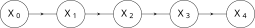
6 Processi stocastici a stati discreti
In questo capitolo iniziamo lo studio generale dei processi stocastici, concentrandoci nel caso di processi di Markov a stati discreti (catene di Markov e processi di Markov a salti).
Nella Sezione Sezione 6.1 introduciamo il linguaggio di base della teoria con alcune definizioni generali ma fondamentali.
Successivamente, la Sezione Sezione 6.2 e la Sezione Sezione 6.3 sviluppano la teoria di base rispettivamente delle catene di Markov e dei processi di Markov a salti.
La Sezione Sezione 6.4 si occupa delle distribuzioni invarianti associate ad un processo di Markov (a stati finiti o comunque discreti), discutendone proprietà fondamentali come l’esistenza e l’eventuale unicità.
Le Sezione Sezione 6.5 è dedicata al problema di stimare i parametri di un processo di Markov a partire dalla osservazione della traiettoria. Discutiamo brevemente la stima di massima verosimiglianza con qualche accenno ai metodi bayesiani.
Concludiamo con la Sezione Sezione 6.6 studiando degli esempi fondamentali di catene su stati infiniti dalla teoria delle code.
6.1 Definizioni generali
Un processo stocastico è una collezione di variabili aleatorie \((X_t)_{t \in \mathcal{T}}\), tutte a valori nello stesso insieme \(E\), detto insieme degli stati del processo, e indicizzate da un insieme \(\mathcal{T} \subseteq \R\) detto insieme dei tempi del processo.
Abbiamo già visto in realtà collezioni di variabili aleatorie, ad esempio nei modelli delle estrazioni da un’urna: basta fare corrispondere ogni estrazione \(1, 2, 3, \ldots\) ad un opportuno “istante” (anche semplicemente \(t=1, 2,3..\)).
Il calcolo delle probabilità fornisce strumenti utili per affrontare problemi relativi ad affermazioni che riguardano il futuro di un processo (questo è il problema della previsione) quanto quelli riguardanti il passato, oppure anche il presente (se non è esattamente osservato, il problema della ricostruzione dello stato presente è noto come problema del filtraggio).
Analogamente alle singole variabili aleatorie, si classificano i processi stocastici in base al fatto che \(E\) sia discreto (quindi finito oppure infinito numerabile, ad esempio \(E = \mathbb{Z}\) oppure \(\N\)), e in tal caso si dice che il processo è a stati discreti, oppure \(E\) sia infinito continuo, \(E = \R\), \(E = \R^k\) (e di solito ciascuna \(X_t\) ammetta densità continua), e in tal caso si dice che il processo è a stati continui.
È possibile anche introdurre una ulteriore classificazione, in base alla struttura dell’insieme \(\mathcal{T}\) dei tempi: il processo si dice a tempi discreti se \(\mathcal{T}\) è discreto (ad esempio finito, oppure \(\mathcal{T} = \N\)), mentre invece se \(E = [0,T]\) è un intervallo (anche illimitato, ad esempio \(E = [0, \infty)\)), il processo si dice a tempi continui.
Combinando questi due criteri si definiscono quindi quattro possibili “classi” di processi, e noi svilupperemo la teoria per studiare esempi fondamentali da tre di queste (il caso di tempi e stati continui è tecnicamente più complicato e non lo tratteremo).
È utile pensare ad un processo stocastico \((X_t)_{t \in \mathcal{T}}\) come ad una variabile aleatoria vettoriale a valori in uno spazio di traiettorie, \(E^{\mathcal{T}}\), formalmente lo spazio delle funzioni dai tempi \(\mathcal{T}\) a valori negli stati \(E\). Ad esempio, se \(\mathcal{T} = \cur{1, \ldots, d}\), allora un processo \((X_i)_{i=1}^d\) può essere pensato come una variabile aleatoria congiunta \(X\), a valori in \(E^d\), l’insieme delle \(d\)-uple ordinate di elementi di \(E\). È particolarmente importante ricordare quindi la differenza (valida in generale) tra la legge delle marginali (rispetto ad una informazione nota \(I\)), ossia tutte le probabilità del tipo \[ P(X_t \in U|I),\] al variare di \(U \subseteq E\) e \(t \in \mathcal{T}\), e la legge congiunta, in questo caso detta semplicemente legge del processo \((X_t)_{t \in \mathcal{T}}\), che è definita come tutte le probabilità del tipo \[ P(X_{t_1} \in U_1, X_{t_2} \in U_2, \ldots, X_{t_k} \in U_k | I),\] al variare di tutte le possibili scelte di tempi \(t_1\), \(t_2\), …, \(t_k \in \mathcal{T}\), e sottoinsiemi dei possibil valori \(U_1\), …, \(U_k \subseteq E\), e del numero dei tempi \(k \ge 1\) (questa definizione permette anche di trattare un numero infinito di tempi).
Queste definizioni generali, valide sia per stati discreti che continui, si riformulano nei contesti specifici introducendo le densità (delle marginali e del processo). Nel caso di processi a stati discreti, per ogni \(t \in \mathcal{T}\) la densità discreta della marginale al tempo \(t\), è la funzione che ad \(x \in E\) associa \[ P(X_t = x |I ).\] La densità discreta del processo è invece la collezione delle probabilità \[ P(X_{t_1}= x_1, X_{t_2}=x_2, \ldots, X_{t_k} =x_k| I),\] al variare di tutte le possibili scelte di tempi \(t_1\), \(t_2\), …, \(t_k \in \mathcal{T}\), e dei possibil valori \(x_1\), …, \(x_k \in E\), e del numero dei tempi \(k \ge 1\).
Nel caso di processi a stati continui (meglio, con densità contiuna), basta sostituire la “\(P\)” di probabilità con “\(p\)” della densità di probabilità.
In generale, determinare la legge di un processo tramite pochi parametri è un problema difficile, soprattutto se l’insieme dei tempi diventa grande (per non parlare del caso infinito): anche se l’insieme degli stati \(E = \cur{0,1}\) contiene due soli elementi, la densità discreta di un processo con \(\mathcal{T} = \cur{1, \ldots, d}\) potrebbe essere una qualsiasi funzione da \(\cur{0,1}^d\) a valori in \([0,1]\) (l’unica condizione è che la somma su tutti i valori sia \(1\)), quindi sono necessari circa \(2^d\) “parametri” per descriverla. D’altra parte, le \(d\) densità marginali si ottengono descrivendo \(d\) “parametri” (la probabilità \(P(X_t = 1 |I)\)), oppure anche meno se le leggi sono tutte uguali – basta quindi specificare un solo parametro. Non è pensabile tuttavia di poter ricostruire la densità del processo a partire dalle densità marginali, eccetto in casi molto particolari, ad esempio se le variabili marginali \(X_t\) sono indipendenti tra loro. A partire da queste premesse, lo studio (e le applicazioni) dei processi stocastici si concentrano pertanto su alcune famiglie particolari che si descrivono in modo efficate con pochi parametri. In questo capitolo vedremo il caso dei processi di Markov, più in particolare delle catene di Markov e dei processi di Markov a salti, in cui il numero dei “parametri” necessari per descrivere la legge del processo è polinomiale (quadratico) nel numero degli stati \(E\), ma le marginali non sono (necessariamente) tra loro indipendenti, e anzi permettono di modellizzare tanti fenomeni osservabili nella realtà.
L’ipotesi principale per definire i processi di Markov, è la proprietà detta appunto di Markov, che si riassume così: il futuro e il passato sono condizionatamente indipendenti, noto esattamente il presente. Ecco una definizione precisa:
Un processo \((X_t)_{t \in \mathcal{T}}\) è di Markov (o markoviano) rispetto all’informazione \(I\) se, per ogni \(x \in E\), \(t \in \mathcal{T}\), le due variabili congiunte relative ai tempi “passati” \((X_s)_{s <t}\) e “futuri” \((X_r)_{r> t}\) sono indipendenti, rispetto all’informazione in cui si conosca esattamente il presente, ossia \(\cur{X_{t} = x}\) (e \(I\)).
Più esplicitamente, se \(A\) è una qualsiasi affermazione che si può formulare solamente in termini delle variabili \((X_s)_{s <t}\), e \(B\) è una qualsiasi affermazione che invece riguarda solamente le variabili \((X_r)_{r> t}\), allora \(A\), \(B\) sono indipendenti rispetto all’informazione \(\cur{X_t = x}\) ed \(I\): \[ P(A, B | I, X_t = x) = P(A | I, X_t = x) P( B | I, X_t = x),\] oppure \[ P(A | I, X_t = x, B) = P(A | I, X_t = x),\] o anche \[P( B | I, X_t = x, A) = P(B | I, X_t = x).\]
In termini grafici, la proprietà di Markov si traduce in una rete bayesiana associata al processo \((X_t)_{t \in \mathcal{T}}\) del seguente tipo:
Nella definizione di processo di Markov, passato e futuro hanno un ruolo simmetrico, come è naturale aspettarsi vista la simmetria nel concetto di indipendenza probabilistica tra due eventi, tuttavia si predilige spesso il punto di vista in cui si condiziona rispetto al passato e si calcola la probabilità di un evento futuro.
La proprietà di Markov permette di decomporre la densità (discreta o continua) del processo in termini di prodotti, usando la regola del prodotto generalizzata e l’indipendenza: infatti, dati tempi \(t_1<t_2<\ldots < t_k\) e stati \(x_1\), … \(x_k\), si ha (sottointendendo \(I\)) \[\begin{equation}\begin{split} & P(X_{t_1}= x_1, X_{t_2}=x_2, \ldots, X_{t_k} =x_k) =\\ & = P(X_{t_1} = x_1)\cdot P(X_{t_2}=x_2| X_{t_1} = x_1) \cdot P(X_{t_3}=x_3| X_{t_2} = x_2, X_{t_1} = x_1)\cdot \ldots \\ & \quad \ldots \cdot P( X_{t_k } = x_k | X_{t_{k-1}}=x_{k-1}, \ldots, X_{t_1} = x_1)\\ & = P(X_{t_1} = x_1) \prod_{i=2}^k P(X_{t_i}=x_i| X_{t_{i-1}} = x_{i-1}). (\#eq:markov-path)\end{split}\end{equation}\] Pertanto, per conoscere la densità del processo \(X\), basta conoscere la densità marginale al tempo \(t_0 = \min \mathcal{T}\) e tutte le cosiddette probabilità di transizione (o densità di transizione nel caso continuo), ossia \[ P(X_{t } = y | X_s = x),\] al variare di \(s<t \in \mathcal{T}\) e per ogni coppia di stati \(x\), \(y \in E\).
Nonostante la notevole semplificazione rispetto alla densità generale, si tratta comunque di una descrizione complessa (le coppie di tempi possono essere tantissime, anche infinite). Per procedere ulteriormente e sviluppare una teoria semplice ma flessibile è opportuno procedere in due modi:
considerare insiemi di tempi \(\mathcal{T}\) come intervalli discreti \(\mathcal{T} = \cur{0,1,2,\ldots, n}\) o continui \(\mathcal{T} = [0,T]\) (eventualmente anche infiniti). In questo modo è sufficiente descrivere la probabilità di transizione tra un istante \(s\) e il “successivo” \(t =s+1\), nel caso discreto, oppure \(t=s+\delta s\) (infinitesimo) nel caso continuo.
considerare il caso di processi di Markov omogenei, ossia tali che le probabilità di transizione dal tempo \(s\) al tempo \(t\) dipendano solamente dalla differenza dei tempi \(t-s\), o equivalentemente, per ogni \(\Delta t \ge 0\) si abbia \[ P(X_{t } = y | X_s = x) = P(X_{t+\Delta t} = y | X_{s+\Delta t } = x)\] per stati qualunque \(x\), \(y \in E\), purché \(t+\Delta t\) e \(s+\Delta t\) siano pure tempi in \(\mathcal{T}\) (altrimenti non ha senso \(X_{t+\Delta t}\) o \(X_{s+\Delta t}\)).
Vedremo nelle prossime sezioni che i processi di Markov che soddisfano queste due condizioni si possono descrivere con un numero di parametri dell’ordine degli elementi di \(E\) elevato al quadrato (essenzialmente tramite una matrice con tante righe e colonne quanti sono gli stati).
Osservazione. L’omogeneità riguarda solamente le probabilità di transizione tra stati, e non la legge marginale al tempo iniziale del processo \(t_0 = \min\mathcal{T}\). Pertanto per descrivere completamente un processo di Markov omogeneo bisogna anche specificare tale legge marginale. Vedremo nelle sezioni successive come le leggi marginali ad ogni tempo \(t\) si ottengono di conseguenza.
Concludiamo la sezione con un’ultima definizione molto importante nella teoria e nelle applicazioni dei un processo stocastici, la stazionarietà. Essa estende in un certo senso l’omogeneità da due tempi a un numero arbitrario (è tuttavia una definizione generale e non riguarda solo i processi di Markov).
Un processo \((X_t)_{t \in \mathcal{T}}\) si dice stazionario se, per ogni \(\Delta t \ge 0\), la legge (congiunta) del processo coincide con quella del “traslato” \((X_{t+\Delta t})_{ t \in \mathcal{T}}\) (purché i tempi \(t+\Delta t\) appartengano a \(\mathcal{T}\)). Più precisamente, per ogni \(k\ge 1\) e \(t_1\), \(t_2\), …, \(t_k \in \mathcal{T}\) e \(\Delta t \ge 0\), la legge congiunta di \((X_{t_1}, ..., X_{t_k})\) coincide con quella di \((X_{t_1+\Delta t}, ..., X_{t_k+\Delta t})\), purché i tempi \(t_i +\Delta t\) appartengano a \(\mathcal{T}\). In particolare, nel caso di stati discreti, vale \[ P( X_{t_1}= x_1, \ldots, X_{t_k}= x_k) = P( X_{t_1+\Delta t }= x_1, \ldots, X_{t_k+\Delta t}= x_k),\] per qualsiasi scelta di stati \(x_1\), …, \(x_k \in E\). Nel caso continuo l’identità sopra vale per le densita continue (scrivendo la densità \(p\) al posto della probabilità \(P\)).
Osserviamo che la stazionarietà implicitamente dipende dall’informazione che si suppone nota \(I\) (sottointesa sopra).
A volte questa definizione è detta di stazionarietà in senso stretto, per distinguerla da una versione più debole (in senso lato, si veda la Sezione Sezione 7.1). La definizione può sembrare macchinosa perché bisogna assicurare che i tempi traslati \(t_i +\Delta t\) appartengano comunque all’insieme dei tempi \(\mathcal{T}\). Ma in effetti è una condizione naturale, altrimenti non avrebbe proprio senso la variabile aleatoria \(X_{t_i+\Delta t}\). Due casi molto semplici che considereremo spesso sono i tempi discreti \(\mathcal{T} = \mathbb{N}\), così ponendo \(\Delta t \in \mathbb{N}\) sicuramente la condizione \(t_i +\Delta t \in \mathbb{N}\) è sempre soddisfatta, oppure i tempi continui \(\mathcal{T}= [0, \infty)\). Il vantaggio della definizione data sopra è che vale anche per insiemi di tempi finiti o comunque limitati.
Osservazione. Se un processo \(X\) è stazionario, necessariamente tutte le leggi delle marginali \(X_t\) coincidono: basta usare \(k=1\) nella definizione sopra.
6.1.1 Esercizi
Sia \((X_t)_{t\in \mathcal{T}}\) un processo a valori in un inseme di stati \(E\) discreto, tale che tutte le marginali \(X_t\) siano indipendenti tra loro. Dire se è markoviano e calcolarne le probabilità di transizione. Sotto quali condizioni sulle leggi marginali il processo è stazionario?
6.2 Catene di Markov
In questa sezione studiamo i processi di Markov \((X_t)_{t \in \mathcal{T}}\) a tempi discreti, in particolare poniamo \[\mathcal{T} = \cur{0,1,2,\ldots, n} \subseteq \mathbb{N}\] e stati discreti (spesso finiti). Per semplificare molti risultati aggiungeremo anche l’ipotesi che siano processi omogenei. In particolare le probabilità di transizione tra \(k\) e \(k+1 \in \mathcal{T}\) dipendono solo dagli stati \(x\), \(y \in E\), e non da \(k\): \[ P(X_{k+1} = y | X_k = x) = P(X_{1} = y| X_0=x).\] La terminologia più precisa per tali processi è di catene di Markov omogenee (homogeneous Markov chains in inglese) ma spesso omettiamo per brevità il termine omogenee e scriviamo solo catene di Markov .
Osservazione. L’insieme dei tempi \(\mathcal{T}\) non deve necessariamente essere della forma \(\cur{0,1, \ldots, n}\), ma basta che sia un qualsiasi “intervallo” discreto \(\cur{m, m+1, m+2, \ldots, m+n} \subseteq \mathbb{Z}\) costituito da tempi equispaziati. Spesso è comodo considerare anche infiniti tempi e porre direttamente \(\mathcal{T} = \mathbb{N}\) o anche \(\mathcal{T} = \mathbb{Z}\).
Le probabilità di transizione \[ Q_{x \to y} = P(X_1 = y | X_0=x)\] al variare di \(x\), \(y \in E\) sono spesso raccolte in una matrice quadrata, con tante righe e colonne quanti gli stati (eventualmente infinite), \(Q \in \mathbb{R}^{E \times E}\), detta matrice di transizione associata alla catena di Markov \(X\).
Lo stato di una macchina – che può essere accesa, ON, oppure spenta, OFF – è rappresentato tramite una catena di Markov sull’insieme degli stati \(E = \cur{\text{OFF}, \text{ON}}\) con probabilità di transizione \[ P(X_1 = \text{ON} | X_0 = \text{OFF}) = 10\%,\]
\[ P(X_1 = \text{OFF} | X_0 = \text{ON}) =70\%.\] Poiché \[ P(X_1 = \text{OFF} | X_0 = \text{OFF}) = 1- P(X_1 = \text{ON} | X_0 = \text{OFF}) = 90\%,\] e \[ P(X_1 = \text{ON} | X_0 = \text{ON}) = 1- P(X_1 = \text{OFF} | X_0 = \text{ON}) = 30\%,\] possiamo definire la matrice di transizione (ordinando gli stati nell’ordine \(\text{OFF}\), \(\text{ON}\)) come \[\bra{ \begin{array}{cc} Q_{\text{OFF} \to \text{OFF}} & Q_{\text{OFF} \to \text{ON}} \\ Q_{\text{ON} \to \text{OFF}} & Q_{\text{ON} \to \text{ON}} \end{array}} = \bra{ \begin{array}{cc} 0.9 & 0.1 \\ 0.7 & 0.3 \end{array}}. (\#eq:example-markov-chain)\]
Osservazione. Come si può osservare anche nell’Esempio ?exm-esempio-on-off, la somma delle probabilità in ciascuna riga della matrice di transizione vale \(1\), questo perché, per ogni \(x\in E\), le probabilità \[ (Q_{x \to y})_{y \in E} = ( P(X_1 = y| X_0 = x))_{y \in E}\] sono la densità discreta della variabile \(X_1\) rispetto all’informazione \(X_0=x\).
In generale, una qualsiasi matrice \(Q\) con entrate a valori in \([0,1]\) e tale che la somma sulle righe sia costante e uguale ad \(1\) è detta matrice stocastica. Le matrici di transizione delle catene di Markov sono tutte matrici stocastiche.
Se anche la somma sulle colonne è uguale ad \(1\) è detta matrice bistocastica (vedremo l’utilità di questo concetto più avanti).
Grazie all’identità ?eq-markov-path, la legge di una catena di Markov è determinata dalla legge marginale al tempo iniziale (diciamo \(0 \in \mathcal{T}\)) e dalla matrice di transizione. Infatti, vale \[\begin{equation} P(X_0 = x_0, X_1=x_1, \ldots X_n = x_n) = P(X_0 = x_0) \prod_{k=1}^n Q_{x_{k-1}\to x_{k}}, (\#eq:markov-chain-path) \end{equation}\] che permette di calcolare la probabilità di osservare che la catena \(X\) percorra un cammino, ossia una sequenza ordinata di stati \(\gamma = (x_0 \to x_1 \to \ldots \to x_n)\): \[ P(X = \gamma) = P(X_0 = x_0) Q_\gamma\] dove il “peso” del cammino \(\gamma\), è il prodotto delle probabilità di transizione \[ Q_\gamma = \prod_{k=1}^n Q_{x_{k-1}\to x_{k}}.\] Vediamo un esempio.
Si consideri una catena di Markov come nell’Esempio ?exm-esempio-on-off, con matrice di transizione ?eq-example-markov-chain e si supponga che valga \(X_0=\text{OFF}\). Allora la probabilità di osservare il cammino \[\text{OFF} \to \text{OFF} \to \text{OFF} \to \text{ON} \to \text{OFF} \to \text{ON}\] è data dal prodotto \[ 0.9 \cdot 0.9 \cdot 0.1\cdot 0.7\cdot 0.1 = 0.00567.\]
Osservazione. Per calcolare la probabilità di una qualsiasi affermazione \(A\) circa una catena di Markov \((X_n)_{n=0}^\infty\), è quindi sufficiente rappresentare \(A\) in termini di cammini (a partire dal tempo iniziale) e sommare le probabilità corrispondenti ottenute tramite la formula sopra, purché gli eventi relativi a cammini diversi siano a due a due incompatibili. Questo avviene anche se i cammini hanno lunghezze diverse, ma nessun cammino considerato si può ottenere come prolungamento di un altro.
Si consideri una catena di Markov come nell’Esempio ?exm-esempio-on-off, con matrice di transizione ?eq-example-markov-chain e \(X_0=\text{OFF}\). Allora la probabilità \[ P( \text{$X_2 =\text{OFF}$ oppure $X_3 = \text{ON}$ } ) = 0.916\] perché l’affermazione sopra equivale ad osservare uno dei seguenti cammini (a partire dal tempo \(0\) in \(\text{OFF}\)) \[ \begin{array} {|llll|l|} X_0 & X_1 & X_2 & X_3 & Q_\gamma\\ \hline \text{OFF} & \to \text{OFF} & \to \text{OFF}& & 0.9 \cdot 0.9 \\ \text{OFF} & \to \text{ON} &\to \text{OFF}& & 0.1\cdot 0.7\\ \text{OFF} & \to \text{OFF} &\to \text{ON} & \to \text{ON }& 0.9\cdot 0.1\cdot 0.3\\ \text{OFF} & \to \text{ON} & \to \text{ON} & \to \text{ON}& 0.1\cdot 0.3 \cdot 0.3\\ \hline \end{array}\]
Notiamo che gli eventi corrispondenti sono a due a due incompatibili perché nessuno dei quattro cammini si ottiene come prolungamento di un altro. Sommando i pesi dei cammini si ottiene la probabilità cercata.
L’osservazione sopra si giustifica considerando ad esempio la rappresentazione tramite diagrammi ad albero dei sistemi di alternative associati a ciascuna variabile \(X_n\) di una catena di Markov. Nella pratica, tuttavia, tale rappresentazione diventa troppo pesante, e si preferisce “comprimerla” introducendo un grafo pesato orientato i cui nodi corrispondono agli stati \(i \in E\), e l’arco da \(i\) ad \(j \in E\) è pesato con la probabilità di transizione \(Q_{ij}\) (se la probabilità è nulla non viene rappresentato). Il grafo associato permette facilmente di calcolare le probabilità \[ \prod_{k=1}^n Q_{x_{k-1} x_k}\] associate ad un cammino \(x_0 \to x_1 \to \ldots \to x_n\), ma non include la probabilità marginale al tempo \(0\) (necessaria per determinare completamente la probabilità del cammino).
La rappresentazione grafica di una catena con matrice di transizione ?eq-example-markov-chain è
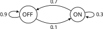
Tornando al caso generale, le densità marginali di una catena di Markov si ottengono sommando la densità congiunta su tutti i possibili valori delle altre variabili. Pertanto si trova che \[ P(X_n = x_n) = \sum_{x_0, x_1, \ldots x_{n-1} \in E} P(X_0 = x_0)\prod_{k=1}^n Q_{x_{k-1}x_k}.\] Per quanto esplicita, la sommatoria sopra è estesa su un grande numero di valori. Usando direttamente la proprietà di Markov, è possibile ottenere un’equazione ricorsiva per la densità marginale al tempo \(n\): \[\begin{split} P(X_n = x_n) & = \sum_{x_{n-1} \in E} P(X_n = x_n | X_{n-1} = x_{n-1}) P(X_{n-1} = x_{n-1})\\ & = \sum_{x_{n-1} \in E} Q_{x_{n-1}x_{n}} P(X_{n-1} = x_{n-1}).\end{split}\] Se intepretiamo \(Q\) come una matrice in \(\R^{E \times E}\), allora una densità di probabilità \(P(X_n = \cdot)\) si può pensare come un vettore in \(\R^{E}\). In particolare, è utile pensarlo come vettore riga \[ \pi_n(x) = P(X_n = x)\] (ossia con tante colonne quante \(E\)), così la formula sopra diventa semplicemente un prodotto tra matrici: \[ \pi_{n} = \pi_{n-1} Q, (\#eq:master-discreta)\] che iterando ci porta ad una versione compatta della formula esplicita sopra: \[ \pi_n = \pi_{n-1} Q = \pi_{n-2} Q^2 = \ldots = \pi_0 Q^n,\] dove le potenze \(Q^k\) sono intese nel senso del prodotto di matrici.
In R il prodotto tra matrici (di dimensioni compatibili) si ottiene tramite il comando %*%. Possiamo quindi calcolare e rappresentare graficamente le densità marginali di una catena avente matrice di transizione ?eq-example-markov-chain e marginale al tempo \(0\) uniforme sui due stati.
# rappresentiamo lo stato iniziale come un vettore riga
dens_0 <- matrix( c(1/2,1/2), nrow=1)
# definiamo la matrice di transizione
Q = matrix( c(0.9, 0.1, 0.7,0.3 ), nrow=2, byrow=TRUE)
# otteniamo le densità marginali tramite prodotto vettore*matrice
dens_1 = dens_0 %*% Q
dens_2 = dens_1 %*% Q
dens_3 = dens_2 %*% Q
# al solito per rappresentarle in un singolo grafico costruiamo una matrice a partire dalle densità (ciascuna densità è una riga)
dens_matrice <- rbind(dens_0, dens_1, dens_2, dens_3)
# Plottiamo il diagramma a barre
alternative = c("Off", "On")
colori = miei_colori[1:4]
barplot( dens_matrice, beside=TRUE, col=colori, names.arg=alternative, ylab="probabilità", xlab="stato")
# Aggiungiamo una legenda
legend('topright', fill=colori, legend=c("X_0", "X_1", "X_2", "X_3"), cex=0.8)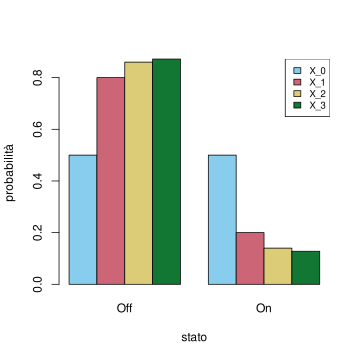
In alternativa, possiamo rappresentare come funzione del tempo le densità marginali, come segue:
t = seq(0,5, by=1)
dens = dens_0
dens_matrice = dens_0
for(iter in 2:length(t)){
dens = dens %*% Q
dens_matrice = rbind( dens_matrice, dens)
}
plot( t, dens_matrice[,1], col=miei_colori[1], ylim=c(0,1), ylab='probabilità', type='l', lwd=3)
lines( t, dens_matrice[,2], col=miei_colori[2],type='l', lwd=3)
legend('topright', fill=colori, legend=c("Off", "On"), cex=0.8)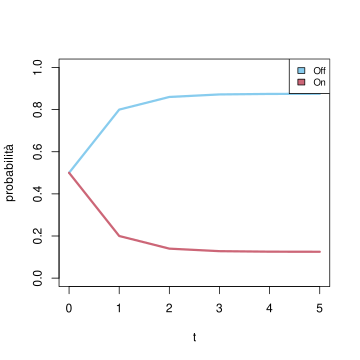
Ovviamente le due curve sommano a \(1\) in ogni tempo, ma con più di due stati è comunque utile rappresentarle tutte.
6.2.1 Esercizi
Si consideri la matrice \[ Q = \bra{ \begin{array}{lll} 0.1 & 0.3 & * \\ * & 0.5 & 0.4 \\ * & 0.1 & 0.9 \end{array}}.\] Completare la matrice affinchè sia la matrice di transizione di una catena di Markov sull’insieme degli stati \(E = \cur{1,2,3}\). Supponendo che al tempo iniziale \(X_0 = 2\), calcolare le densità delle marginali ai tempi \(t=1,2,3\) (usare eventualmente comandi R per semplificare i calcoli) e rappresentare graficamente tali densità. Calcolare la probabilità dell’evento “\(X_t \neq 3\) per ogni \(t =1,2,3\)”.
6.3 Processi di Markov a salti
I processi di Markov \((X_t)_{t \in \mathcal{T}}\) a tempi continui \[\mathcal{T} = [0,T]\] e a stati discreti sono detti a salti, perché le traiettorie “saltano” da uno stato all’altro – anche se la struttura dei tempi permetterebbe un passaggio continuo da uno stato all’altro, l’insieme degli stati non lo permette.
Come per le catene di Markov, ci limitiamo a considerare il caso di processi omogenei, ossia tali che, per ogni \(t \in [0,T]\), \(\delta t>0\) tale che \(t+\delta t \in [0,T]\), si abbia \[ P(X_{t+\delta t} = y | X_t = x) = P(X_{\delta t} = y| X_0 = x).\] In analogia con quanto accade per le catene di Markov, per descrivere completamente la legge di un processo di Markov a salti, è sufficiente indicare la densità marginale al tempo iniziale \((P(X_0 = x))_{x\in E}\) e una opportuna matrice che permetta di determinare le probabilità di transizione da uno stato all’altro. Nel caso dei processi di Markov a salti, essa è la matrice delle intensità di salto, definita come \[ \begin{split} L_{xy} & =\frac{d}{dt}\Bigr|_{\substack{t=0}} P(X_{t} =y| X_0 =x) \\ & = \lim_{\delta t \to 0}\frac{ P(X_{\delta t} = y | X_0 =x) - P(X_{0} = y | X_0 =x)}{\delta t},\end{split}\] dove si suppone che il limite esista (finito) per ogni coppia di stati \(x\), \(y \in E\).
Osservazione. La matrice \(L\) si ottiene come derivata della matrice (stocastica) delle intensità di salto. Pertanto, anche se \(L\) non è una matrice stocastica, essa eredita da questa alcune proprietà: dati \(x\), \(y \in E\),
- se \(x\neq y\), vale \(P(X_{0} = y | X_0 =x) = 0\) e quindi \[ L_{xy} =\frac{d}{dt} P(X_{t} =y| X_0 =x) = \lim_{\delta t \to 0}\frac{ P(X_{\delta t} = y | X_0 =x)}{\delta t} \ge 0\] è una quantità non-negativa (eventualmente nulla), ma non necessariamente minore di \(1\)
- se invece \(x=y\), allora \(P(X_0 = y| X_0 = x) = 1\) e quindi \[ L_{xy} =\frac{d}{dt} P(X_{t} =y| X_0 =x) = \lim_{\delta t \to 0}\frac{ P(X_{\delta t} = y | X_0 =x) -1}{\delta t} \le 0.\] Infine, la condizione che la somma su ciascuna riga valga \(1\) si traduce in \[ \sum_{y \in E} L_{xy} = \frac{d}{dt} \sum_{y \in E} P(X_{t} =y| X_0 =x) = \frac{d}{dt} 1 = 0,\] ossia la somma su ciascuna riga vale \(0\), o equivalentemente, isolando il termine nella somma in cui \(y=x\), \[ L_{xx} = - \sum_{y \neq x} L_{xy}.\]
Lo stato di una macchina può essere spento (Off), in attesa (Standby) o acceso (On) e lo si modellizza tramite un processo di Markov a salti su \(E = \cur{\text{Off}, \text{Standby}, \text{On}}\), con matrice delle intensità di salto \[L = \bra{ \begin{array}{ccc} * & 5 & 10 \\ 1 & * & 3 \\ 0 & 4 & * \end{array}},(\#eq:markov-jump-L)\] dove non abbiamo neppure indicato le entrate sulla diagonale (che si ricavano imponendo la somma sulle righe nulla, quindi ad esempio nella prima riga vale \(-15\)).
Il problema che ora affrontiamo è se la matrice delle intensità di salto sia sufficiente a determinare la legge dell’intero processo (supponendo anche di conoscere la densità marginale al tempo \(0\)). La risposta è affermativa, e l’osservazione principale per dedurre risultati analoghi al caso delle catene di Markov è che i tempi continui \(\mathcal{T} = [0,T]\) possono essere ottenuti come un limite di tempi discreti \[ \mathcal{T}^\delta = \cur{0, \delta, 2\delta, \ldots, \lfloor T/ \delta \rfloor \delta },\] dove \(\lfloor T/\delta \rfloor\) indica il più grande numero naturale minore di \(T/\delta\). Se si considera il processo ristretto a tali tempi discreti, ossia si pone \[ X^\delta_k := X_{k \delta},\] esso è una catena di Markov con matrice di transizione \[ P^\delta_{xy} = P(X_{\delta} = y| X_0 = x) = Id + L \delta + O(\delta^2) \approx Id + L \delta.\] Indicando con \(\pi_{t}(x) = P(X_t = x)\) il vettore (riga) della densità discreta marginale al tempo \(t\), si ha per i tempi della forma \(t = h \delta\), \[ \pi_t = \pi_0 ( P^{\delta})^h \approx \pi_0 \bra{ Id + \frac{t L}{h}}^h,\] avendo scritto \(\delta = t/h\). Ora, fissato \(t \in [0,T]\) si possono trovare \(h \to \infty\) in modo che \(\delta \to 0\) e quindi, ricordando il limite notevole (che vale anche per le matrici) \[ \lim_{h \to \infty} \bra{Id + \frac{A}{h}}^h = \exp\bra{A}, \] si trova che \[ \pi_t = \pi_0 \exp\bra{ t L}.\] Pertanto, le densità delle marginali sono determinate dalla matrice \(L\) e dalla densità al tempo iniziale.
Si consideri un processo di Markov a salti con matrice \(L\) come in ?eq-markov-jump-L. Supponendo che \(X_0 = \text{Off}\), possiamo determinare le densità marginali calcolando tramite R l’esponenziale di matrice (per fare questo è necessario caricare la libreria Matrix e usare la funzione expm())
# rappresentiamo lo stato iniziale come un vettore riga
dens_0 <- matrix( c(1,0,0), nrow=1)
# definiamo la matrice delle intensità di salto
L = matrix( c(-15, 5, 10, 1, -4, 3, 0, 4, -4 ), nrow=3, byrow=TRUE)
# carichiamo la libreria Matrix
library("Matrix")
# otteniamo le densità marginali tramite prodotto vettore*matrice
dens_01 = dens_0 %*% expm(0.1*L)
# per calcolare la densità al tempo 0.3 possiamo ulteriormente moltiplicare la densità al tempo 0.1 per l'esponenziale exp(0.2 L)
dens_03 = dens_01 %*% expm(0.2*L)
dens_04 = dens_03 %*% expm(0.1*L)
# al solito per rappresentarle in un singolo grafico costruiamo una matrice a partire dalle densità (ciascuna densità è una riga). È necessario convertire in una matrice perché la libreria Matrix usa un altro oggetto per le matrici -- e il comando barplot non lo riconosce correttamente
dens_matrice <- as.matrix(rbind(dens_0, dens_01, dens_03, dens_04))
# Plottiamo il diagramma a barre
alternative = c("Off", "Standby", "On")
colori = miei_colori[1:4]
barplot( dens_matrice, beside=TRUE, col=colori, names.arg=alternative, ylab="probabilità", xlab="stato")
# Aggiungiamo una legenda
legend('topright', fill=colori, legend=c("X_0", "X_{0.1}", "X_{0.3}", "X_{0.4}"), cex=0.8)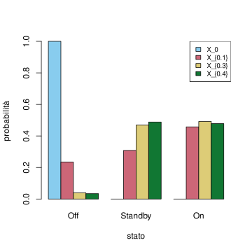
Osservazione. L’analoga dell’equazione ricorsiva ?eq-master-discreta nel caso di processi di Markov a salti, è l’equazione differenziale ottenuta derivando la formula sopra: \[ \frac{d}{dt} \pi_t = \pi_t L (\#eq:master-continua) \] Tale equazione lineare è detta anche equazione di Kolmogorov (in inglese Kolmogorov forward oppure master equation).
deltat = 0.01
t = seq(0,0.5, by=deltat)
Q= as.matrix( expm(deltat *L) )
dens = dens_0
dens_matrice = dens_0
for(iter in 2:length(t)){
dens = dens %*% Q
dens_matrice = rbind( dens_matrice, dens)
}
plot( t, dens_matrice[,1], col=miei_colori[1], ylim=c(0,1), ylab='probabilità', type='l', lwd=3)
lines( t, dens_matrice[,2], col=miei_colori[2],type='l', lwd=3)
lines( t, dens_matrice[,3], col=miei_colori[3],type='l', lwd=3)
legend('topright', fill=colori, legend=c("Off", "Standby", "On"), cex=0.8)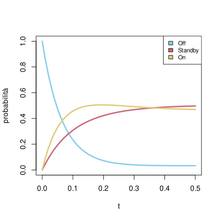
Con lo stesso argomento di approssimazione dei tempi continui tramite tempi discreti, possiamo considerare la probabilità di osservare un cammino che visiti nell’ordine gli stati \(x_0 \to x_1 \to \ldots \to x_n\). Trattandosi però di tempi continui, dobbiamo specificare i tempi di permanenza in ciascuno stato \(t_1, \ldots, t_n\), in modo che il processo “salti” al tempo \(t_1\) dallo stato \(x_0\) verso \(x_1\), al tempo \(t_1+t_2\) da \(x_1\) verso \(x_2\), e così via. Fissato \(\delta\) tale che \(t_1 = \delta h_1\), \(t_2 = \delta h_2\) ecc., si trova l’approssimazione \[ \begin{split} P( X^\delta = (x_0 \to x_1 \to \ldots \to x_n) ) \approx & P(X_0 = x_0) (1+ \frac{ t_1 L_{x_{0} x_{0}}}{h_1} )^{h_1} ( \delta L_{x_0 x_1})\cdot \\ & \cdot (1+ \frac{ t_2 L_{x_{1} x_{1}}}{h_2} )^{h_2} ( \delta L_{x_1 x_2})\cdot \ldots\\ & \cdot (1+ \frac{ t_n L_{x_{n-1} x_{n-1}}}{h_n} )^{h_n} ( \delta L_{x_{n-1} x_n}). \end{split} \] Al tendere di \(\delta\) a zero si trova che la probabilità tende a zero: tuttavia dividendo per \(\delta^n\) si ottiene una “densità” non nulla, data dall’espressione \[ P(X_0 = x_0) \prod_{k=1}^n \exp\bra{t_k L_{x_{k-1} x_{k-1}}} \prod_{k=1}^n L_{x_{k-1} x_k}.\] L’intepretazione rigorosa si ottiene introducendo le variabili aleatorie \(T_1\), \(T_2\), …, \(T_n\) che indicando appunto il tempo di permanenza del processo in ciascuno degli stati visitati \(x_0\), \(x_1\), …, \(x_{n-1}\). Inoltre, i tempi di salto sono dati dalle somme \(S_1 = T_1\), \(S_2 = T_1+T_2\), …, \(S_n = T_1+T_2+\ldots+T_n\). Con questa notazione, abbiamo ottenuto che \[ \begin{split} p(T_1 = t_1, X_{S_1} & = x_1, T_2 = t_2, X_{S_2} = x_2 \ldots, T_n = t_n, X_{S_n} = x_n) \\ & = P(X_0 = x_0) \prod_{k=1}^n \exp\bra{t_k L_{x_{k-1} x_{k-1}}} L_{x_{k-1} x_k},\end{split} (\#eq:likelihood-jump-process)\] dove la notazione “\(p\)” per la densità di probabilità si riferisce solo alle variabili continue \(T_1\), \(T_2\), …, \(T_n\), mentre le variabili \(X_{S_1}\), \(X_{S_2}\), …, \(X_{S_n}\) sono ovviamente discrete (questo è un caso in cui la densità congiunta non è né discreta né continua). La formula sopra contiene molti prodotti, il che suggerisce che vi siano variabili indipendenti. In effetti, si può anche riscrivere in questo modo, separando le variabili continue da quelle discrete: \[ P(X_{S_1} = x_1, X_{S_2} = x_2 \ldots, X_{S_n} = x_n) = P(X_0 =x_0) \prod_{k=1}^n \frac{ L_{x_{k-1} x_k}}{-L_{x_{k-1} x_{k-1}}},\] e \[ \begin{split} & p(T_1 = t_1, T_2 = t_2, \ldots, T_n = t_n| X_{S_1}= x_1, \ldots X_{S_n} = x_n) \\ & = P(X_0 = x_0) \prod_{k=1}^n (-L_{x_{k-1}x_{k-1}}) \exp\bra{t_k L_{x_{k-1} x_{k-1}}}.\end{split}\] In termini più intuitivi, la prima equazione mostra che le variabili \(X_0\), \(X_{S_1}\), …, \(X_{S_n}\) che indicano gli stati visitati dal processo sono una catena di Markov (a tempi discreti) con probabilità di transizione (per \(x\neq y\)) \[ Q_{xy} = \frac{L_{xy}}{-L_{xx}},\] mentre, supponendo noti gli stati visitati, i tempi di permanenza \(T_1\), \(T_2\), …, \(T_n\) sono variabili aleatorie indipendenti tra loro, e ciascuna \(T_k\) ha densità continua esponenziale di parametro \(-L_{x_{k-1}x_{k-1}}\).
Osservazione. Le formule trovate permettono una descrizione alternativa di un processo di Markov a salti (ad esempio utile per simularli). Una traiettoria del processo si ottiene a partire da una traiettoria della catena di Markov con matrice di transizione \(Q\) e successivamente campionando i tempi di permanenza indipendenti con densità esponenziale dei parametri opportuni.
6.3.1 Esercizi
Si consideri una matrice di intensità di salto (sull’insieme degli stati \(E = \cur{1,2,3}\)) \[ L = \bra{ \begin{array}{lll} * & 2 & 0 \\ 0 & * & 3 \\ 1 & 0 & * \end{array}}.\] Supponendo che al tempo iniziale sia \(X_0 = 1\), calcolare le densità delle marginali al tempo \(t=1\) (usare eventualmente comandi R per semplificare i calcoli) e rappresentare graficamente tale densità. Si faccia lo stesso (numericamente e graficamente) per tutti i tempi \(t \in [0,1]\).
6.4 Distribuzioni invarianti
Gli esempi delle sezioni precedenti, sia nel caso di catene di Markov che per processi a salti, mostrano che, partendo da una certa densità marginale al tempo iniziale, il processo raggiunge (anche piuttosto rapidamente) un “equilibrio” in cui le densità marginali sono costanti nel tempo. Tale fenomeno è utile in svariate applicazioni, e lo studio delle possibili densità limite è quindi particolarmente rilevante. Per definire tali densità, basta considerare rispettivamente l’equazione ricorsiva ?eq-master-discreta o l’equazione differenziale ?eq-master-continua e imporre che la densità marginale non cambi nel tempo e sia pertanto invariante. Diamo quindi due definizioni, nel caso a tempi discreti (catene) e a tempi continui (processi a salti).
Sia \(Q\) una matrice di transizione. Si dice che un vettore riga \(\pi \in \R^E\) corrispondente ad una densità discreta sull’insieme degli stati, quindi tale che \(\pi_x \in [0,1]\) per ogni \(x \in E\), e \(\sum_{x \in E} \pi_x = 1\) è una distribuzione invariante per \(Q\) se vale \[ \pi = \pi Q. (\#eq:inv-Q)\]
Sia \(L\) una matrice di intensità di salto. Si dice che un vettore riga \(\pi \in \R^E\) corrispondente ad una densità discreta sull’insieme degli stati, quindi tale che \(\pi_x \in [0,1]\) per ogni \(x \in E\), e \(\sum_{x \in E} \pi_x = 1\) è una distribuzione invariante per \(L\) se vale \[ 0 = \pi L. (\#eq:inv-L)\]
Osservazione. In entrambi i casi, si può quindi affermare che \(\pi\) è invariante se e solo se, qualora si consideri un processo \(X\) (catena o a salti) tale che la legge marginale al tempo iniziale sia \(\pi\), allora tutte le leggi marginali coincidono con \(\pi\).
Osservazione. La condizione di invarianza si può riscrivere anche come (nel caso delle catene) segue: per ogni \(x \in E\), \[ \sum_{y \neq x} \pi_x Q_{x \to y} = \sum_{y \neq x} \pi_y Q_{ y \to x}.\] In questa formulazione il membro a sinistra si interpreta come flusso (di probabilità) uscente dallo stato \(x\), mentre il membro a destra è un flusso entrante. L’equazione esprime quindi un bilancio di flusso. Nel caso di processi a salti, l’equazione diventa \[ \sum_{y \neq x} \pi_x L_{x y} = \sum_{y \neq x} \pi_y L_{ yx}.\]
La seguente proposizione collega il concetto di stazionarietà con il fatto che la densità delle marginali sia invariante. È ovvio che se la catena è stazionaria, allora la densità delle marginali deve essere invariante. Il viceversa richiede qualche osservazione in più, che qui non riportiamo per brevità.
Sia \(X\) una catena di Markov o un processo di Markov a salti. Allora \(X\) è stazionario se e solo se la marginale al tempo iniziale \(X_0\) ha come densità una distribuzione invariante.
La domande teoriche che ci poniamo ora sono: data \(Q\) (oppure \(L\)) le distribuzioni invarianti esistono sempre? se sì, quante sono?
Dal lato pratico è invece importante disporre di algoritmi efficienti per poter calcolare, almeno in modo approssimato, le distribuzioni invarianti.
Tali problemi si possono affrontare anche con tecniche di algebra lineare, perché le equazioni ?eq-inv-Q o ?eq-inv-L sono dei sistemi di equazioni lineari omogenei nelle incognite date dalle componenti del vettore \(\pi\). In questa sezione ci limitiamo ad esporre i risultati principali, accennando alle dimostrazioni.
6.4.1 Esistenza
Il primo risultato riguarda l’esistenza di (almeno) una distribuzione invariante. La risposta è affermativa se l’insieme degli stati \(E\) è finito.
Se l’insieme degli stati \(E\) è finito, e quindi la matrice di transizione \(Q\) oppure delle intensità di salto \(L\) sono matrici con un numero finito di righe e colonne, allora esiste sempre almeno una distribuzione invariante \(\pi\).
Dimostrazione. Vediamo prima la dimostrazione nel caso delle catene di Markov. Si consideri una qualsiasi densità discreta \(\pi_0\) sull’insieme degli stati – intepretata come vettore riga. Sappiamo che se \(\pi_0\) è la densità marginale di una catena di Markov \((X_n)_n\) al tempo \(n=0\), la densità marginale al tempo \(k=0,1,2,\ldots\), è \(\pi_0 Q^k\). Se esiste il limite per \(k \to \infty\) delle \(\pi_0 Q^k\), esso è una distribuzione invariante, ma l’esistenza in generale non è garantita (anzi in generale è falsa). Tuttavia, se si considerano le medie aritmetiche \[ \bar{\pi}_n = \frac 1 n \sum_{i=1}^n \pi_0 Q^k,\] allora ciascuna \(\bar{\pi}_n\) è una densità discreta di probabilità (quindi un vettore a componenti in \([0,1]\) e a somma \(1\)), e per l’estensione al caso vettoriale del teorema di Bolzano-Weierstrass, esiste una sottosuccessione \(\bar{\pi}_{n_k}\) con \(n_k \to \infty\) che converge ad un limite \[ \bar{\pi}_\infty = \lim_{k \to \infty} \bar{\pi}_{n_k},\] ossia tale che ogni componente del vettore \(\bar{\pi}_{n_k}\) converge alla corrispondente componente di \(\bar{\pi}_\infty\). Anche il limite è una densità discreta di probabilità sugli stati \(E\), perché ciascuna componente del vettore è in \([0,1]\), essendo limiti di valori compresi tra \(0\) e \(1\), e la somma dei limiti delle componenti coincide con il limite della somma, che vale \(1\) (qui si usa che \(E\) è finito, quindi la somma non è una serie). Quindi, basta dimostrare che vale \[ \bar{\pi}_\infty = \bar{\pi}_\infty Q.\] Per ogni \(n\), si ha l’identità \[ \begin{split} \bar{\pi}_n Q & = \bra{ \frac 1 n \sum_{k=1}^n \pi_0 Q^k} Q \\ & = \frac 1 n \sum_{k=1}^n \pi_0 Q^{k+1} \\ & = \frac{1}{n}\sum_{k=1}^n \pi_0 Q^{k} + \frac{1}{n}\bra{ \pi_0 Q^{n+1} - \pi_0 Q}\\ & = \bar{\pi}_n + \frac{1}{n}\bra{ \pi_0 Q^{n+1} - \pi_0 Q}.\end{split}\] Al tendere di \(n \to \infty\), il termine \[ \frac{1}{n}\bra{ \pi_0 Q^{n+1} - \pi_0 Q} \to 0\] è infinitesimo al tendere di \(n \to \infty\), perché le componenti del vettore \(\pi_0 Q^{n+1}\) sono comprese tra \([0,1]\), e si divide per \(n\). Ponendo \(n = n_k \to \infty\), concludiamo quindi che \(\bar{\pi}_\infty\) è una distribuzione invariante.
Nel caso di processi di Markov a salti, l’idea è analoga, ma si sostituisce alla media aritmetica una media integrale sui tempi, ponendo \[ \bar{\pi}_t = \frac 1 t \int_0^t \pi_0 \exp\bra{ s L} d s. \] Si può estrarre anche in questo caso una successione \(t_k\to \infty\) in modo che \(\bar{\pi}_{t_k}\) converga a un vettore \(\bar{\pi}_\infty\), che è una densità discreta su \(E\). Per mostrare che è invariante, si calcola \[ \begin{split} \bar{\pi}_t L & = \frac 1 t \int_0^t \pi_0 \exp\bra{ s L} L d s\\ & = \frac 1 t \int_0^t \pi_0 \frac{d}{ds} \exp\bra{ s L} d s \\ & = \frac 1 t \pi_0 \int_0^t \frac{d}{ds} \exp\bra{ s L} d s\\ & = \frac 1 t \pi_0 \bra{ \exp\bra{t L} - Id},\end{split}\] che al tendere di \(t \to \infty\) tende a zero (si noti l’analogia con il caso a tempi discreto).
Questo risultato teorico garantisce quindi che i sistemi lineari ?eq-inv-Q o ?eq-inv-L ammettano almeno una soluzione, e pertanto è sufficiente usare un qualsiasi metodo risolutivo per determinarla (ad esempio la riduzione a gradini di Gauss). Tuttavia, la dimostrazione stessa suggerisce un metodo approssimato basato sul calcolo delle medie \(\bar{\pi}_n\) nel caso di catene o \(\bar{\pi}_{t}\) nel caso di processi di Markov a salti.
Si consideri la matrice \(Q\) definita in ?eq-example-markov-chain. Per risolvere il sistema omogeneo, conviene passare alla trasposta e determinare tutti i vettori colonna \(x \in \R^2\) tali che \[ (Id - Q^T) x = 0.\] Nel caso di interesse, si trova che sono tutti del tipo \[ x = u (7,1 )\] dove \(u \in \R\) è un parametro da determinare imponendo che la somma delle componenti di \(x\) sia \(1\). Concludendo si trova quindi \(u=8\) e quindi \[ \pi = (\frac 7 8, \frac 1 8 ).\] Vediamo come procedere tramite R. Diamo prima una soluzione “esatta” mediante il comando eigen(), che determina autovalori e autovettori: in questo caso ci interessano infatti gli autovettori di \(Q^T\) con autovalore \(1\), o equivalentemente gli autovettori di \(Id - Q^T\) con autovalore \(0\) (il nucleo di \(Id - Q^T\)).
Q = matrix( c(0.9, 0.1, 0.7,0.3 ), nrow=2, byrow=TRUE)
#calcoliamo autovalori e autovettori della matrice Q trasposta
sol = eigen(t(Q))
sol$values[1] 1.0 0.2sol$vectors [,1] [,2]
[1,] 0.9899495 -0.7071068
[2,] 0.1414214 0.7071068# siamo interessati all'autovettore di autovalore 1 che è il primo
pi_inv = sol$vectors[, 1]
pi_inv = pi_inv/sum(pi_inv)
# la distribuzione invariante è quindi
pi_inv[1] 0.875 0.125# rappresentiamola con un barplot
alternative = c("OFF", "ON")
colori = miei_colori[1]
barplot( pi_inv, col=colori, names.arg=alternative, ylab="probabilità", xlab="stato")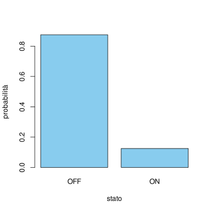
Determiniamo le distribuzioni invarianti nel caso della matrice di intensità di salto ?eq-markov-jump-L.
L = matrix( c(-15, 5, 10, 1, -4, 3, 0, 4, -4 ), nrow=3, byrow=TRUE)
sol = eigen(t(L))
sol$values[1] -1.514005e+01 -7.859945e+00 8.881784e-16sol$vectors [,1] [,2] [,3]
[1,] 0.7539667 -0.09196364 -0.04908437
[2,] -0.1055968 -0.65662548 -0.73626560
[3,] -0.6483699 0.74858912 -0.67491013# siamo interessati all'autovettore di autovalore 0, che è il terzo
pi_inv = sol$vectors[,3]
pi_inv = pi_inv/sum(pi_inv)
# la distribuzione invariante è quindi
pi_inv[1] 0.03361345 0.50420168 0.46218487# rappresentiamola con un barplot
alternative = c("Off", "Standby", "On")
colori = miei_colori[1]
barplot( pi_inv, col=colori, names.arg=alternative, ylab="probabilità", xlab="stato")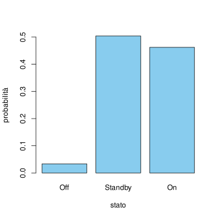
Osservazione. È fondamentale non confondere l’equazione \(\pi (Id - Q) = 0\), oppure \(\pi L = 0\) con le “trasposte” \((Id - Q) v = 0\) e \(L v = 0\). Infatti queste hanno sempre come soluzione la densità uniforme \(v_x = 1/n\), dove \(n\) è il numero degli elementi di \(E\). Questo perché la somma su ciascuna riga delle matrici di transizione vale \(1\) (mentre vale \(0\) nel caso delle matrici di intensità di salto).
Se non si specifica l’operazione di trasposizione si trova sempre tale soluzione, che però non è quella cercata.
Vi è tuttavia un caso in cui la densità uniforme è sicuramente una distribuzione invariante: si tratta del caso in cui la matrice \(Q\) sia bistocastica, ossia anche la somma sulle colonne dia \(1\). Un caso particolare è quando \(Q\) sia simmetrica.
L’potesi che l’insieme degli stati \(E\) sia finito è necessaria. Si consideri una catena sugli stati \(E = \mathbb{N}\) e \(Q_{x \to x+1} = 1\) per ogni \(x \in \mathbb{N}\) e \(0\) altrimenti. Allora ogni distribuzione invariante deve essere uniforme, ma essendo gli stati infiniti una tale distribuzione non esiste.
6.4.2 Unicità
Affrontiamo il problema dell’unicità, mostrando in quali condizioni la distribuzione invariante è unica e che è possibile classificare tutte le distribuzioni invarianti associate ad una matrice (di transizione \(Q\) oppure di intensità di salto \(L\)). Cominciamo da un esempio:
Un gioco tra Alice e Bruno consiste nel lanciare un dado a sei facce ripetutamente fintanto che non esca il numero \(1\) (e in tal caso vince Alice) oppure il numero \(6\) (e e in tal caso vince Bruno). Possiamo rappresentare una partita tramite una catena di Markov sugli stati \(E = \cur{A, G, B}\), dove \(A\) indica che Alice ha vinto, \(B\) Bob ha vinto, e \(G\) il gioco continua (si deve lanciare nuovamente il dado).
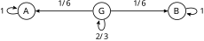
È chiaro che vi sono almeno due distribuzioni stazionarie, corrispondenti rispettivamente al caso in cui Alice vinca, \(\pi_A = (1,0,0)\) oppure Bruno vinca, \(\pi_B = (0,0,1)\). Ma in realtà sono infinite, perché ogni combinazione \[ \alpha \pi_A + (1-\alpha) \pi_B = (\alpha, 0, 1-\alpha),\quad \text{con $\alpha \in [0,1]$}\] è pure una distribuzione invariante (corrispondente al fatto che Alice vinca con probabilità \(\alpha\) e Bob con probabilità \(1-\alpha\)). In effetti, è intuitivamente chiaro che, se la catena di Markov al tempo iniziale si trova in \(G\), la densità limite è quella corrispondente ad \(\alpha = 1/2\), perché le regole del gioco non favoriscono né Alice né Bruno.
L’esempio sopra evidenzia un fatto generale: se vi sono almeno due distribuzioni invarianti (diverse), allora le distribuzioni invarianti sono infinite perché tutte le combinazioni come sopra, al variare del parametro \(\alpha\in [0,1]\) sono pure invarianti. Se l’insieme degli stati \(E\) è finito, è possibile determinare un numero finito di distribuzioni invarianti “di base” in modo da poter rappresentare tutte le altre distribuzioni invarianti come combinazioni di esse. La procedura è “geometrica” e si basa sulla decomposizione dell’insieme degli stati in sottoinsiemi più piccoli, dette classi irriducibili. Diamo alcune definizioni.
Data una matrice di transizione \(Q\), si dice che lo stato \(y \in E\) è accessibile (o raggiungibile) da \(x \in E\) se esiste un cammino \(\gamma = (x_0 \to x_1 \to \ldots \to x_n)\) con \(x_0 = x\) e \(x_n = y\) e peso strettamente positivo: \[ Q_\gamma = \prod_{k=1}^n Q_{x_{k-1} x_k} >0. \] Nel caso di una matrice di intensità di salto \(L\), il peso \(Q_\gamma\) va sostituito con \[ L_\gamma = \prod_{k=1}^n L_{x_{k-1} x_k}.\]
Ricordando che \(Q^n_{xy}\) è la somma dei pesi di tutti i cammini lunghi \(n\) che collegano \(x\) a \(y\), si può equivalentemente dire che \(y\) è raggiungibile da \(x\) se esiste \(n \ge 1\) tale che \(Q^n_{xy}>0\).
Osserviamo che \(y \in E\) è raggiungibile da \(x\in E\), e \(z \in E\) è raggiungibile da \(y\), allora \(z\) è raggiungibile da \(x\). Tuttavia non è detto che \(x\) sia raggiungibile da \(y\) (o da \(z\)): se questo appunto non accade, lo stato \(x\) è detto transitorio.
Data una matrice di transizione \(Q\) (o una matrice di intensità di salto \(L\)) uno stato \(x \in E\) è detto transitorio se esiste \(y \in E\) tale che \(y\) è raggiungibile da \(x\), ma \(x\) non lo è da \(y\). Se \(x\) non è transitorio, è detto ricorrente.
Equivalentemente, \(x\) è ricorrente se, per ogni \(y\in E\) tale che \(y\) è raggiungibile da \(x\), anche \(x\) lo è da \(y\). Se l’insieme degli stati \(E\) è finito, non possono essere tutti transitori e deve esserci almeno uno stato ricorrente.
Consideriamo una catena di Markov di cui rappresentiamo graficamente la matrice di transizione come segue (completare per esercizio le probabilità mancanti, in modo che la somma sulle righe, ossia gli archi uscenti da ciascuno stato, sia \(1\)):
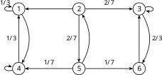
Allora stato \(1\) è raggiungibile dallo stato \(2\), mentre lo stato \(2\) non è raggiungibile dallo stato \(1\). Lo stato \(2\) è quindi transitorio. Anche lo stato \(5\) lo è. Tutti i rimanenti stati \(\cur{1,3,4,6}\) sono ricorrenti.
Introduciamo ora il concetto di classe chiusa irriducibile.
Data una matrice di transizione \(Q\) (o una matrice di intensità di salto \(L\)), un sottoinsieme \(C \subseteq E\) di stati è detto classe chiusa se, per ogni \(x \in C\) e \(y \in E\) raggiungibile da \(x\), anche \(y \in C\). Una classe chiusa \(C\) è detta irriducibile se non contiene altre classi chiuse \(C' \subseteq C\) (diverse dai casi banali \(C' = \emptyset\) oppure \(C' = C\) stessa). La matrice \(Q\) (oppure \(L\)) è detta irriducibile se tutto l’insieme degli stati \(E\) è una classe chiusa irriducibile.
Equivalentemente, da uno stato in una classe chiusa non è possibile raggiungere stati al di fuori di essa (mentre è possibile entrarvi), e una classe chiusa è irriducibile quando da ogni stato in essa si può raggiungere qualsiasi altro stato in essa. Data una classe chiusa è ben definita la restrizione della matrice \(Q\) su \(C \times C\), perché \(Q_{x \to y}=0\) per \(x \in C\) e \(y \notin C\), e quindi \((Q_{x \to y})_{y \in C}\) sono densità discrete di probabilità (la somma delle righe vale ancora \(1\)). Un ragionamento analogo vale nel caso di matrici di intensità di salto \(L\).
Riprendiamo l’Esempio ?exm-esempio-catena-due-classi. Gli stati \(\cur{1,4}\) sono una classe chiusa (irriducibile), mentre ad esempio gli stati \(\cur{1,2}\) non lo sono, perché si può “uscirne” visitando ad esempio lo stato \(4\).
L’importanza della condizione di irreducibilità è dovuta del seguente risultato.
Sia \(Q\) una matrice di transizione (oppure \(L\) di intensità di salto) irriducibile su un insieme di stati \(E\) finito. Allora esiste una e una sola distribuzione invariante.
Dimostrazione. Abbiamo già visto che almeno una distribuzione invariante \(\pi\) esiste, quindi basta mostrare l’unicità. Nel caso di matrice \(Q\) di transizione, introduciamo la matrice \[ R = \frac 1 2 \sum_{n=0}^\infty 2^{-n} Q^n,\] che è pure una matrice di transizione, in particolare la somma sulle righe vale \(1\) perché \[ \frac 1 2 \sum_{n=0}^\infty 2^{-n} = 1.\] Grazie all’ipotesi di irriducibilità è tale che \(R_{xy}>0\) per ogni \(x\), \(y \in E\). Nel caso di \(L\) matrice di intensità di salto, introduciamo invece \(R = \exp(L)\) che pure è una matrice di transizione e similmente ha tutte entrate strettamente positive. Se \(\pi\) è una distribuzione invariante per \(Q\) (o per \(L\)), vale l’identità \[ \pi R = \frac 1 2 \sum_{n=0}^\infty 2^{-n} \pi Q^ n = \pi \frac 1 2 \sum_{n=0}^\infty 2^{-n} = \pi,\], ossia \(\pi\) è distribuzione invariante anche per la matrice di transizione \(R\) (nel caso di Markov a salti il ragionamento è anche più semplice). Consideriamo quindi una seconda distribuzione invariante \(\tilde{\pi}\) e per mostrare che \(\pi = \tilde \pi\) scriviamo la seguente diseguaglianza: \[\begin{split} \sum_{x \in E} | \pi_x - \tilde \pi_x| & = \sum_{x \in E} | \sum_{y \in E} \pi_y R_{yx} - \sum_{y \in E} \tilde \pi_y R_{yx}| \\ & = \sum_{x \in E} | \sum_{y \in E} (\pi_y - \tilde \pi_y) R_{yx} | \\ & \le \sum_{x \in E} \sum_{y \in E} | \pi_y-\tilde \pi_y| R_{yx} \\ & = \sum_{y \in E} | \pi_y-\tilde \pi_y| \sum_{x \in E} R_{yx} \\ & = \sum_{y \in E} | \pi_y-\tilde \pi_y|.\end{split}\] Poiché la prima e l’ultima espressione coincidono (è solamente cambiato l’indice di somma), devono essere tutte uguaglianze, in particolare nel passaggio in cui si è stimato, per ogni \(x \in E\), \[ | \sum_{y \in E} (\pi_y - \tilde \pi_y) R_{yx} | \le \sum_{y \in E} | \pi_y-\tilde \pi_y| R_{yx}\] deve in realtà valere l’uguaglianza. È noto tuttavia che la diseguaglianza triangolare tra numeri reali \[ | \sum_i z_i | \le \sum_i |z_i|\] è una uguaglianza se e solo se hanno tutti lo stesso segno, ossia \(z_i \ge 0\) per ogni \(i\) oppure \(z_i \le 0\) per ogni \(i\). Se quindi vale per ogni \(y \in E\) \[ (\pi_y - \tilde \pi_y )R_{yx} \ge 0,\] essendo \(R_{yx}>0\) si ottiene (dividendo) che \(\pi_y \ge \tilde \pi_y\) per ogni \(y \in E\). Ma poiché sono entrambe densità di probabilità, \[ \sum_{y \in E} \pi _y = 1 = \sum_{y \in E}\tilde{\pi}_y,\] ne segue che deve valere \(\pi_y = \tilde \pi_y\) (se la diseguaglianza fosse stretta per qualche \(y\) allora non potrebbe valere l’uguaglianza nella somma).
Osservazione. La diseguaglianza principale nella dimostrazione sopra si può usare per mostrare anche che, data una qualsiasi densità discreta \(\pi_0\) su \(E\) la quantità detta variazione totale tra \(\pi_0 Q^n\) e la distribuzione invariante \(\pi\), \[ \sum_{x\in E} | \pi - \pi_0 Q^n |\] decresce al crescere di \(n\). Questa è una quantità utile per stimare la convergenza delle densità marginali di una catena verso la distribuzione invariante.
Nel caso in cui \(Q\) non sia irriducibile, bisogna preliminarmente decomporre \(E\) in classi chiuse irriducibili. Precisamente, ogni classe chiusa irriducibile non contiene stati transitori (intuitvamente basterebbe infatti rimuoverli per ottenere una classe chiusa più piccola), e due classi chiuse irriducibili diverse sono necessariamente disgiunte (altrimenti l’intersezione sarebbe più piccola di entrambe). Ne segue che, se \(E\) è finito, si può partizionare in insiemi a due a due disgiunti \[ E = \cur{\text{stati transitori}} \cup C^1 \cup C^2 \cup \ldots \cup C^k,\] dove le \(C^i\) sono classi chiuse irriducibili (\(k \ge 1\) perché non tutti gli stati sono transitori).
Se consideriamo la restrizione di \(Q\) su ciascuna classe chiusa irriducibile \(C^i\), allora esiste una e una sola distribuzione invariante associata \(\pi^i\), che può essere vista come una distribuzione invariante su tutto l’insieme degli stati \(E\) (semplicemente la probabilità assegnata al di fuori di \(C^i\) è nulla). Si può dimostrare (non lo faremo) che tutte le distribuzioni invarianti sono ottenibili come combinazioni \[ \pi = \alpha_1 \pi^1 + \alpha_2 \pi^2 + \ldots, + \alpha_k \pi^k,\] dove \(\alpha_1\), \(\alpha_2\), …, \(\alpha_k \in [0,1]\) sono tali che \[\alpha_1+\alpha_2 +\ldots + \alpha_k = 1,\] ossia \((\alpha_i)_{i=1}^k\) sono una (qualsiasi) densità discreta di probabilità. In particolare, ogni distribuzione invariante è nulla sugli stati transitori (che quindi si possono subito trascurare se in un problema è richiesto di calcolare tutte le distribuzioni invarianti).
Riprendiamo l’Esempio ?exm-esempio-catena-due-classi. Per determinare tutte le distribuzioni invarianti, basta calcolare l’unica distribuzione per la classe chiusa irriducibile \(C_1 = \cur{1,4}\), che si trova impostando il bilancio di flusso, ad esempio in \(1\): \[ \pi_1 \frac 2 3 = \pi_4 \frac 1 3 \quad \text{da cui} \quad (\pi_1, \pi_4) = (\frac 1 3 , \frac 2 3 ).\] Similmente, per la classe chiusa irriducibile \(C_2 = \cur{3,6}\), si trova \[ \pi_3 \frac 2 3 = \pi_6 \quad \text{da cui} \quad (\pi_3, \pi_6) = (\frac 3 5, \frac 2 5).\] Di conseguenza tutte le distribuzioni invariante della catena originaria sono parametrizzate nel seguente modo: \[ (\alpha \frac 1 3, 0, (1-\alpha) \frac 3 5, \alpha \frac 2 3, 0, (1-\alpha)\frac 2 5 ),\] dove \(\alpha \in [0,1]\) è un parametro (invece di usare \(2\) parametri \(\alpha_1\), \(\alpha_2\) che sommano a \(1\) ne indichiamo solo uno).
6.4.3 Sul limite delle potenze della matrice di transizione
In questa sezione, principalmente utile per svolgere alcuni esercizi, analizziamo più nel dettaglio sotto quali condizioni, data una catena di Markov1 con matrice di tranzione \(Q\) su un insieme di stati finito, il limite \[ \lim_{n \to \infty} (Q^n)_{ij}\] esiste per ogni coppia di stati \(i\), \(j \in E\). Inoltre presentiamo un metodo per calcolare tale limite mediante sistemi di equazioni lineari.
Osserviamo che l’intepretazione di \((Q^n)_{ij}\) in termini di probabilità è, per via del risultato generale sulle densità marginali, ponendo \(\pi_0\) la densità discreta che vale \(1\) nello stato \(i\) e \(0\) altrimenti, \[ (Q^n)_{ij} = P(X_n = j | X_0 =i).\] D’altra parte le potenze \(Q^n\) intervengono sia nel teorema di esistenza delle distribuzioni invarianti, sia nel teorema di unicità (un po’ implicitamente, nelle ipotesi per via della condizione di irriducibilità, e nella dimostrazione per la costruzione della matrice \(R\), con tutte le entrate positive).
L’osservazione di base è che, se il limite esiste, \[ Q^\infty_{ij} = \lim_{n \to \infty} (Q^n)_{ij},\] allora è una matrice le cui righe, ossia i vettori \((Q^\infty_{ij})_{j \in E}\), sono tutte distribuzioni invarianti. Infatti vale \[ \begin{split} Q^\infty & = \lim_{n \to \infty }Q^n = \lim_{n \to \infty } Q^{n+1} = \lim_{n \to \infty }Q^n \cdot Q\\ & = Q^\infty\cdot Q.\end{split}\] Che scritta componente per componente diventa il sistema definente le distribuzioni invarianti: \[ Q^\infty_{ij} = \sum_{k} Q^{\infty}_{ik} Q_{k j}.\] Inoltre poiché le righe di \(Q^n\) sono densità discrete di probabilità, anche il limite lo è.
Si potrebbe pensare che, se la catena è irriducibile, quindi esiste una sola distribuzione invariante \(\pi\), allora necessariamente il limite \(Q^\infty\) esiste ed è la matrice in cui tutte le righe sono identiche e uguali a \(\pi\). Il ragionamento è corretto, purché il limite esista, cosa che non accade sempre, come il prossimo esempio mostra.
Sia \(E = \cur{\text{Off}, \text{On}}\) e sia (ordinando gli stati nell’ordine in cui sono scritti), \[ Q = \bra{ \begin{array}{cc} 0 & 1 \\ 1 & 0 \end{array}}.\] Il grafo associato è il seguente:
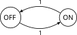
La “dinamica” della catena è molto semplice: se inizia nello stato Off, allora passerà a tempi alterni da Off in On. Questo si vede anche calcolando le potenze di \(Q\), \[ Q^2 = \bra{ \begin{array}{cc} 1 & 0 \\ 0 & 1 \end{array}} = Id \quad Q^3 = \bra{ \begin{array}{cc} 0 & 1 \\ 1 & 0 \end{array}}= Q, \quad Q^4 = Id\ldots\] quindi il limite \(Q^\infty\) non esiste perché le componenti si alternano tra i valori \(0\) e \(1\). In questo esempio tuttavia è facile vedere che la catena è irriducibile con l’unica distribuzione invariante (uniforme).
La condizione di irriducibilità non è quindi sufficiente a garantire che il limite \(Q^\infty\) esista. La seguente nozione è invece il concetto corretto.
Sia \(Q\) una matrice di transizione di una catena di Markov su un insieme \(E\) di stati finito. Diciamo che \(Q\) (o la catena) è regolare se esiste \(n\in \mathbb{N}\) tale che la potenza \(Q^n\) ha tutte entrate strettamente positive, ossia \[ (Q^n)_{ij} >0 \quad \text{per ogni $i$, $j \in E$.}\]
La definizione somiglia molto a quella di catena irriducibile, ma a ben vedere è diversa: nel caso di catena irriducibile si richiede che per ogni \(i\), \(j \in E\) esista un cammino di una qualsiasi lunghezza \(n\) che li collega, ossia \((Q^n)_{ij}>0\). Nel caso di catena regolare, si richiede che la lunghezza \(n\) sia la stessa per tutti gli \(i\), \(j \in E\) (anche quando \(i=j\)). Questo ragionamento ci dice quindi che se la catena è regolare, allora è anche irriducibile. Ma non necessariamente il viceversa, come mostra l’esempio di prima.
L’importanza del concetto è data dal seguente teorema, che non dimostriamo, ma è utile negli esercizi.
Sia \(Q\) una matrice di transizione irriducibile su un insieme di stati \(E\) finito. Allora \(Q\) è regolare se e solo se esiste il limite \[ Q^\infty_{ij} = \lim_{n \to \infty}(Q^{n})_{ij} \quad \text{per ogni $i$, $j \in E$.}\] Più in generale, anche se \(Q\) non è irriducibile, il limite esiste (per ogni \(i\), \(j \in E\)) se e solo se la catena ristretta a ciascuna classe chiusa irriducibile è regolare.
Appoggiandosi a questo risultato possiamo garantire l’esistenza di \(Q^\infty\) in molti problemi concreti: basta prima classificare gli stati e le classi chiuse irridicubili e controllare che la matrice ristretta a ciascuna classe sia regolare.
Ci sono però due aspetti pratici da non sottovalutare: come verificare che \(Q\) sia regolare? Una strategia è di moltiplicare \(Q\) per se stessa, finché le componenti non sono tutte positive. Un metodo più semplice è di considerare solo le potenze di \(2\), ossia calcolare \[Q^2 = Q \cdot Q, \quad Q^4 = Q^2 \cdot Q^2, \quad Q^8 = Q^4\cdot Q^4, \quad \text{ecc.,}\] In questo modo l’esponente \(n\) cresce più rapidamente e l’algoritmo termina prima (se termina). Senza un calcolatore, tuttavia tale algoritmo non è molto pratico. Ci sono però diversi criteri per la regolarità, e suggeriamo il seguente (senza dimostrazione) che può essere utile negli esercizi.
Sia \(Q\) una matrice di transizione irriducibile su un insieme di stati \(E\) finito. Se esiste (almeno) uno stato \(i\in E\) tale che \(Q_{ii}>0\), allora \(Q\) è anche regolare.
Basta quindi osservare, dopo aver controllato che \(Q\) sia irriducibile, che la diagonale della matrice \(Q\) non sia identicamente nulla. Attenzione tuttavia, la condizione è solo sufficiente, esistono catene \(Q\) irriducibili con diagonale tutta nulla ma comunque regolari. Questo criterio comunque risolve la maggior parte dei casi concreti (in particolare negli esercizi).
Appurato quindi che \(Q^\infty\) esista (oppure ignorando il problema temporaneamente), la domanda successiva è come calcolarlo. L’osservazione chiave è di ripartire dall’argomento che mostrava tutte le righe invarianti, e trovare una seconda equazione (o sistema di equazioni):
\[ \begin{split} Q^\infty & = \lim_{n \to \infty }Q^n = \lim_{n \to \infty } Q^{1+n} = \lim_{n \to \infty }Q\cdot Q^n\\ & = Q \cdot Q^\infty.\end{split}\]
Scrivendo la relazione per ciascun elemento della matrice, diventano le equazioni \[ Q^{\infty}_{ij} = \sum_{k\in E} Q_{ik} Q^\infty_{kj}, \quad \text{per $i$, $j\in E$.}\]
Queste equazioni, aggiunte all’informazione che le righe di \(Q^\infty\) sono distribuzioni invarianti, permettono di ottenere un sistema che, una volta risolto, determina completamente la matrice \(Q^\infty\).
Riprendiamo l’Esempio ?exm-alice-bruno del gioco tra Alice e Bruno. Sappiamo che tutte le distribuzioni invarianti sono della forma \((\alpha, 0, 1-\alpha)\), con \(\alpha \in [0,1]\). È ovvio che se lo stato iniziale della catena è \(A\) (vince Alice), che corrisponde ad \(\alpha = 1\), allora la catena rimane in quello stato (è assorbente), e quindi la riga corrispondente nella matrice \(Q^\infty\) è \[(Q^\infty_{A A}, Q^\infty_{AG}, Q^\infty_{AB}) = (1,0,0).\] Similmente, se lo stato iniziale è \(B\), \[(Q^\infty_{B A}, Q^\infty_{BG}, Q^\infty_{BB}) = (0,0,1).\] Resta da determinare la riga corrispondente allo stato iniziale transitorio \(G\). Abbiamo già osservato che per simmetria della situazione deve essere \(\alpha =1/2\), però possiamo anche procedere scrivendo le equazioni sopra (non serve scriverle tutte, basta trovarne una che permetta di determinare \(\alpha\)). Ad esempio con \(i= G\), \(j=A\), troviamo \[ \begin{split} \alpha & = Q^\infty_{GA} = Q_{GA}Q^{\infty}_{AA} + Q_{GG}Q^{\infty}_{GA} + Q_{GB}Q^{\infty}_{BA}\\ &= \frac 1 6 \cdot 1 + \frac 4 6 \cdot \alpha + \frac 1 6 \cdot 0\end{split}\] dove abbiamo usato le righe di \(Q^\infty\) precedentemente calcolate (quelle relative agli stati \(A\) e \(B\)). Concludiamo che \(\alpha = \frac 1 2\) come avevamo già osservato.
Osservazione. Esiste in realtà una formula generale per determinare \(Q^\infty\). Tuttavia per ottenerla conviene effettuare un passaggio intermedio per semplificare la struttura della catena e riportarsi in un certo senso all’esempio sopra, in cui gli stati sono o transitori o assorbenti.
A meno di scegliere opportunamente un ordinamento degli stati, possiamo supporre che che gli stati transitori siano \(\cur{1, \dots, \ell}\) e vi siano \(k\) classi chiuse irriducibili \(C^1\), \(C^2\), …, \(C^k\). Dal teorema di classificazione, le distribuzioni invarianti sono determinate da una scelta dei parametri \((\alpha_{c^j})_{j=1}^k\), dove \(\alpha_{c^j}\) indica la probabilità di “entrare” nella classe \(C^j\). Il nostro obiettivo è quindi determinare solamente tali probabilità, a partire dagli stati transitori \(\cur{1, \ldots, \ell}\) (perché se partiamo da uno stato ricorrente, esso apparterrà ad una classe chiusa irriducibile \(C^j\) e quindi sarà solo \(\alpha_{c^j} =1\) e gli altri nulli). Per determinare \(Q^\infty\) la vera incognita sono quindi le probabilità \[ \alpha := (\alpha_{ic^j})_{i=1,\ldots, \ell}^{j=1, \ldots, k} \in [0,1]^{\ell \times k}\] che abbiamo organizzato in una matrice. L’idea è ora di “collassare” le classi chiuse in singoli stati assorbenti, definendo una matrice di transizione più semplice da trattare. Precisamente, introduciamo l’insieme degli stati \[ \bar E = \cur{1, \ldots,\ell} \cup\cur{c^1, c^2, \ldots, c^{k} }\] in cui ogni classe chiusa \(C^j\) corrisponde ora ad un singolo stato. Definiamo una nuova matrice di transizione \(Q'\) nel seguente modo: lasciamo invariate le probabilità di transizione tra coppie di stati transitori, ossia poniamo per \(i,j=1, \ldots, \ell\), \[\bar Q _{i j} = Q_{ij},\] mentre definiamo tutti gli stati come \(c^j\) assorbenti, ossia \[ \bar Q_{c^jc^j} = 1 \quad \text{e} \quad \bar Q_{i c^j} = 0 \text{se $i\neq c^j$,} \] e infine la probabilità di transizione da uno stato transitorio \(i =1, \ldots, \ell\) ad uno stato \(c^j\), \(j=1, \ldots, k\), è data dalla somma di tutte le probabilità (secondo \(Q\)) di passare da \(i\) ad uno qualsiasi degli stati in \(C^j\), ossia \[ \bar Q_{i c^j} = \sum_{x \in C^j} Q_{ix},\] che è semplicemente la probabilità di entrare dallo stato \(i\) nella classe \(C^j\) (in un singolo passo della catena).
Tale catena è in pratica molto semplice da definire, e ha naturalmente una struttura “a blocchi”, per via delle definizioni date: \[ Q' = \bra{ \begin{array}{cc} Q_{TT} & \bar{Q}_{TC} \\ 0 & Id\end{array}},\] dove \(Q_{TT} = \bar{Q}_{TT}\) indica il blocco \(\ell \times \ell\) delle probabilità di transizione tra stati transitori, \(\bar{Q}_{TC}\) indica il blocco \(\ell \times k\) corrispondente alle probabilità di transzione da transitori agli stati assorbenti corrispondenti alle classi chiuse irriducibili, \(0\) e \(Id\) sono rispettivamente una matrice \(\ell \times k\) di tutti zeri e la matrice identità di dimensione \(k\times k\). Tenendo conto di questa decomposizione in blocchi, si può mostrare che la matrice \(\alpha\) (che contiene i parametri da determinare nel problema originario) è data da \[ \alpha = (Id-Q_{TT})^{-1} \bar{Q}_{TC}.\]
Questo perché si mostra che la matrice \(\bar{Q}^\infty = \lim_{n \to \infty} \bar{Q}^n\) esiste ed è data da \[ \bar Q^\infty = \bra{ \begin{array}{cc} 0 & \alpha \\ 0 & Id\end{array}}\] e quindi il sistema da risolvere diventa, in forma matriciale \[ \begin{split} \bra{ \begin{array}{cc} 0 & \alpha \\ 0 & Id\end{array}} & = \bra{ \begin{array}{cc} Q_{TT} & \bar{Q}_{TC} \\ 0 & Id\end{array}} \cdot \bra{ \begin{array}{cc} 0 & \alpha \\ 0 & Id\end{array}} \\ & = \bra{ \begin{array}{cc} 0 & Q_{TT} \alpha +\bar{Q}_{TC}\\ 0 & Id\end{array}}\end{split}\] e quindi troviamo che \[ \alpha = Q_{TT} \alpha + \bar{Q}_{TC} \quad \text{ossia} \quad (Id-Q_{TT}) \alpha = \bar{Q}_{TC}\] e invertendo \(Id-Q_{TT}\) (si mostra che è possibile farlo) si trova la formula.
Riprendiamo l’Esempio ?exm-esempio-catena-due-classi. Ponendo \(C_1 =\cur{1,4}\), \(C_2= \cur{3,6}\) troviamo che la catena di Markov su \(\bar{E}\) è data graficamente da
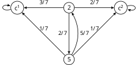
In questo caso, le matrici \(\bar{Q}_{TT} = Q_{TT}\) e \(\bar{Q}_{TC}\) sono rispettivamente \[ Q_{TT} = \bra{ \begin{array}{cc} 0 & 2/7 \\ 5/7 & 0 \end{array}},\] mentre \[ \bar{Q}_{TC} = \bra{ \begin{array}{cc} 3/7 & 2/7 \\ 1/7 & 1/7 \end{array}}. \] Osserviamo che \(\det(Id - Q_{TT}) = 1-10/49 = 39/49>0\), da cui \[ (Id - Q_{TT})^{-1} = \frac {49}{39} \bra{ \begin{array}{cc} 1 & 2/7 \\ 5/7 & 1 \end{array}}\] Si conclude quindi che \(\alpha\) vale \[ \begin{split} \alpha & = (Id - Q_{TT})^{-1}\bar{Q}_{TC} = \frac {49}{39} \bra{ \begin{array}{cc} 1 & 2/7 \\ 5/7 & 1 \end{array}} \bra{ \begin{array}{cc} 3/7 & 2/7 \\ 1/7 & 1/7 \end{array}} \\ & = \frac {1}{39} \bra{ \begin{array}{cc} 23 & 16 \\ 12 & 17 \end{array}}.\end{split} \]
6.4.4 Esercizi
Rita e Bruno effettuano il seguente “gioco”: da un’urna contenente \(R\) palline rosse e \(B= N-R\) palline blu, si effettuano estrazioni con rimpiazzo fintanto che non si osservano o due palline rosse estratte consecutivamente (e in tal caso vince Rita) o due palline blu estratte consecutivamente (e in tal caso vince Bruno). Si può modellizzare tale gioco tramite una catena di Markov sull’insieme degli stati \(E = \cur{RR, RB, BR, BB}\), in cui si tiene conto delle ultime due estrazioni effettuate. In particolare lo stato \(RR\) rappresenta la vittoria di Rita, lo stato \(BB\) quella di Bruno. Calcolare tutte le distribuzioni invarianti. Visualizzare con un grafico la variazione totale tra la densità marginale al tempo \(t\) e il tempo successivo \(t+1\), per \(t=0,1,2,\ldots, 10\).
6.5 Stima dei parametri
In questa sezione consideriamo il problema di stimare i parametri di un processo di Markov omogeneo, sulla base di osservazioni di una traiettoria. Per quanto visto nelle sezioni precedenti, i parametri sono la matrice delle probabilità di transizione \(Q\) per una catena di Markov \((X_n)_{n}\) o delle intensità di salto \(L\) per un processo di Markov a salti \((X_t)_t\), ed eventualmente la densità discreta della marginale al tempo iniziale.
Per semplificare l’esposizione, consideriamo prima il caso di una catena di Markov \((X_n)_n\) su un insieme di stati \(E\), in cui sia noto che \(X_0 = x_0\). Richiamando per chiarezza il robot ideale, in questo caso la matrice di transizione \(Q\) non è nota al robot, ma esso viene informato che \(X\) segue un cammino \(\gamma = (x_0 \to x_1 \to \ldots \to x_n)\), ossia \(X_0 = x_0\), \(X_1=x_1\), …, \(X_n = x_n\) (brevemente scriviamo \(X = \gamma\)). L’approccio bayesiano consiste nel considerare la matrice di transizione \(Q\) come una variabile aleatoria \(\mathcal{Q}\) a valori nelle matrici quadrate \(\R^{E \times E}\) (più precisamente, sappiamo che i possibili valori di \(\mathcal{Q}\) sono matrici stocastiche). Avendo stabilito una densità a priori per \(\mathcal{Q}\), ad esempio uniforme sulle matrici stocastiche, la densità a posteriori è data dalla formula di Bayes \[ p( \mathcal{Q} = Q | X = \gamma) \propto p(\mathcal{Q} =Q ) L( \mathcal{Q} =Q ; X = \gamma),\] dove la verosimiglianza \(L\) è definita al solito come \[ L( \mathcal{Q} =Q ; X = \gamma) = P(X=\gamma| \mathcal{Q} = Q) = P(X_0 = x_0) Q_\gamma = Q_{\gamma},\] perché è noto a priori che \(X_0 = x_0\). Il peso del cammino osservato può essere riscritto raccogliendo i fattori ripetuti, ossia \[ Q_\gamma = \prod_{k=1}^n Q_{x_{k-1} \to x_{k}} = \prod_{i,j \in E} Q_{i\to j}^{\gamma_{i\to j}},\] dove \(\gamma_{i\to j}\) indica il numero di transizioni dallo stato \(i\in E\) a \(j \in E\) che avvengono nel cammino \(\gamma\). In particolare, vale \[ n = \sum_{i,j \in E} \gamma_{i\to j}.\] Se la densità a priori per \(\mathcal{Q}\) è uniforme (sull’insieme delle matrici stocastiche), ossia \(p(\mathcal{Q} = Q) \propto 1\), la densità a posteriori è \[ p(\mathcal{Q} = Q| X = \gamma) \propto L(\mathcal{Q} = Q; X=\gamma) = Q_\gamma = \prod_{i,j \in E} Q_{i\to j}^{\gamma_{i\to j}}.\] Osserviamo che la densità è un prodotto delle marginali, ma dovendo essere \(\mathcal{Q}\) una matrice stocastica le componenti relative ad una stessa riga \(i\), ad esempio \(\mathcal{Q}_{i \to j}\), \(\mathcal{Q}_{i \to k}\) non sono indipendenti (la somma deve essere \(1\)). Possiamo tuttavia affermare che variabili aleatorie associate alle righe di \(\mathcal{Q}\) sono tra loro indipendenti.
Per calcolare il punto di massimo, ossia la stima di massima verosimiglianza \(Q_{\mle}\) dobbiamo tenere conto del vincolo che la somma delle righe della matrice \(\mathcal{Q}\) valga \(1\). Il metodo generale per determinare massimi o minimi di funzioni vincolate consiste nell’introduzione di moltiplicatori di Lagrange, in modo da esprimere che nei punti critici il gradiente della funzione sia ortogonale al vincolo. Nel nostro caso, il vincolo però è così semplice che possiamo evitare l’uso di questa tecnica semplicemente esprimendo la diagonale di \(\mathcal{Q}\) in funzione delle altre entrate sulla riga: \[ Q_{i \to i} = 1 - \sum_{j \neq i} Q_{i \to j} \quad \text{per ogni $i \in E$.}\] Possiamo quindi riscrivere la verosimiglianza nel seguente modo \[ L( \mathcal{Q} = Q ; X=\gamma) = \prod_{i\in E}(1- \sum_{j \neq i} Q_{i \to j})^{\gamma_{i \to i}} \prod_{j \neq i}Q_{i\to j}^{\gamma_{i \to j}}.\] Poiché le righe sono tra loro indipendenti, possiamo ragionare separatamente per ciascuna riga \(i\), ossia determinare il massimo della funzione \[(Q_{i\to j})_{j \neq i} \mapsto (1- \sum_{j \neq i} Q_{i \to j})^{\gamma_{i \to i}} \prod_{j \neq i} Q_{i \to j}^{\gamma_{i \to j}},\] ovvero, passando al logaritmo, \[ \gamma_{i\to i} \log (1- \sum_{j \neq i} Q_{i \to j}) +\sum_{j \neq i} \gamma_{i \to j} \log(Q_{i \to j}).\] Imponendo che la derivata rispetto a ciascuna variabile \(Q_{i\to k}\) (per \(k \neq j\) si annulli, troviamo l’equazione \[0 = \frac{d}{d Q_{i\to k}} \gamma_{i\to i} \log (1- \sum_{j \neq i} Q_{i \to j}) +\sum_{j \neq i} \gamma_{i \to j} \log(Q_{i \to j}) = -\frac{\gamma_{i \to i}}{1- \sum_{j \neq i} Q_{i \to j}} + \frac{\gamma_{i \to k}}{Q_{i \to k}}.\] da cui \[ Q_{i \to k} = \gamma_{i \to k} \cdot \frac{1- \sum_{j \neq i} Q_{i \to j}}{\gamma_{i \to i}}\] Il secondo termine nel prodotto sopra non dipende da \(k\), e quindi sommando questa relazione per \(k \neq i\) troviamo che \[ \sum_{k \neq i} Q_{i \to k} = \sum_{k \neq i} \gamma_{i \to k } \frac{1- \sum_{j \neq i} Q_{i \to j}}{\gamma_{i \to i}}.\] Ricordando che \(Q_{i \to i} = 1- \sum_{j \neq i} Q_{i \to j}\) abbiamo quindi la relazione \[ 1- Q_{i \to i} = \frac{ \sum_{k \neq i} \gamma_{i \to k } }{ \gamma_{i \to i}} Q_{i \to i},\] da cui ricaviamo che \[Q _{i \to i} = \frac{\gamma_{i \to i}}{\sum_{j \in E }\gamma_{i \to j}}.\] In altre parole, abbiamo trovato che la densità discreta di probabilità \((Q_{i \to k})_{k \in E}\) è proporzionale al numero di salti osservati \((\gamma_{i \to k})_{k \in E}\), \[ Q_{i \to k} \propto \gamma_{i \to k}\] o più esplicitamente \[ Q_{i \to k} = \frac{\gamma_{i \to k}}{\sum_{j \in E } \gamma_{i \to j}}.\]
Osservazione. L’espressione sopra per la densità a posteriori e i calcoli per la stima di massima verosimiglianza suggerisce altre densità a priori (dette di Dirichlet) della forma \[ p(\mathcal{Q}= Q) \propto \prod_{i,j \in E} Q_{i\to j}^{\alpha_{ij}},\] per opportuni parametri \(\alpha_{ij}\ge 0\) (dove a essere precisi bisognerebbe scrivere \(Q_{i \to i} = 1- \sum_{j \neq i} Q_{i \to j}\)). Notiamo che i calcoli per la stima di massima verosimiglianza mostrano anche che la moda della densità sopra è data dalla matrice \[ Q_{i \to j} = \frac{ \alpha_{ij}}{\sum_{k \in E} \alpha_{ik}}.\] La formula di Bayes darebbe quindi come densità a posteriori \[ p(\mathcal{Q}= Q | X = \gamma ) \propto \prod_{i,j \in E} Q_{i\to j}^{\alpha_{ij} +\gamma_{i \to j}},\] e di conseguenza la stima di massima densità a posteriori \(\mathcal{Q}_{MAP}\), seguendo gli stessi calcoli della stima di massima verosimiglianza, è \[ Q_{i \to j} =\frac{ \alpha_{ij}+\gamma_{i \to j}}{ \sum_{k \in E} \alpha_{ik} + \gamma_{i \to k}}.\]
Osservazione. Abbiamo supposto che il cammino osservato parta al tempo \(0\) da \(x_0\). Tuttavia se iniziasse da un tempo successivo, allora si pone il problema di stimare \(X_0\). Si può assumere ad esempio che \(X\) sia stazionaria, e quindi supporre che \(\pi_0\) sia una distribuzione invariante. Il problema è che questa dipende da \(Q\) in modo tutt’altro che banale.
Nel caso di processi di Markov a salti, l’argomento è analogo ma si basa sulla formula ?eq-likelihood-jump-process. Per brevità non consideriamo l’approccio bayesiano ma presentiamo solo la stima di massima verosimiglianza. Si consideri un cammino \(\gamma = (x_0\to x_1 \ldots x_n)\) che rimane per un tempo \(t_1\) nello stato \(x_0\), \(t_2\) nello stato \(x_1\) ecc., e si supponga di osservare \(X = \gamma\), ossia tutta la traiettoria da \(X_0 = x_0\) fino a \(X_{t_1+\ldots +t_n} = x_n\). Allora la stima di massima verosimiglianza per la matrice di intensità di salto \(\mathcal{L}_{MLE}\) si ottiene massimizzando l’espressione \[ \prod_{k=1}^n \exp\bra{t_k L_{x_{k-1} \to x_{k-1}}} L_{x_{k-1} \to x_k} = \prod_{i \in E} \exp\bra{\gamma_{i \to i} L_{i\to i} } \prod_{ i\neq j \in E} L_{i\to j}^{\gamma_{i \to j}}\] dove stavolta si è posto \(\gamma_{i \to i}\) il tempo totale trascorso dal cammino nello stato \(i \in E\). Inoltre, poiché la somma delle righe di \(L\) è nulla, possiamo porre \[ \exp\bra{\gamma_{i \to i} L_{i\to i} } = \exp\bra{- \gamma_{i \to i} \sum_{j \neq i} L_{i\to j} }.\] Passando ai logaritmi e derivando rispetto a ciascun parametro \(L_{i \to j}\) si ottiene che \(\mathcal{L}_{MLE}\) è data dall’espressione, per \(i \neq j\), \[ L_{i \to j} = \frac{ \gamma_{i \to j}}{\gamma_{i \to i} }.\]
Osservazione. Negli esempi sopra si suppone di osservare completamente la catena \(X\) in un intervallo (discreto o continuo) di tempi. Più in generale ci si può chiedere cosa accada se mancano le osservazioni delle variabili \(X_k\) in alcuni tempi, oppure se si osserva solamente una funzione \(g(X_k)\) della catena invece, di \(X_k\), o più in generale una funzione \(g(X_k, Z_k)\) dove \(Z\) è un processo indipendente da \(X\). Un esempio fondamentale è dato dal caso in cui \(X\) è un segnale e \(Z\) è un “rumore” che si vorrebbe rimuovere, o filtrare. In queste situazioni si parla di modelli di Markov nascosti (in inglese Hidden Markov Models, HMM) che hanno molteplici applicazioni. Opportune modifiche degli argomenti visti sopra permettono di introdurre algoritmi specifici per stimare i parametri di un HMM, come pure stimare \(X_k\) dalle osservazioni \(g(X_k, Z_k)\) o anche effettuare previsioni.
6.5.1 Esercizi
6.6 Cenni alla teoria delle code
I processi a stati discreti che abbiamo introdotto sopra hanno applicazioni in tantissimi ambiti. In questa sezione mostriamo come semplici modelli possano essere utilizzati per studiare la teoria delle code, ossia delle linee d’attesa che si possono formare in situazioni realistiche, ad esempio quando più persone vogliono accedere ad un servizio (entrare in un negozio, o pagare alla cassa), oppure dei veicoli si presentano ad un casello autostradale, o ancora delle istanze di calcolo che devono essere eseguite da una o più processori in un computer. Lo studio delle code permette di individuare strategie per migliorare l’esperienza di chi è in attesa (ridurre i tempi) rendendone più efficiente il servizio (e quindi eventualmente ridurre i costi). La teoria delle code è un campo molto esteso e noi ne presentiamo solamente i modelli più semplici come esempi interessanti di processi di Markov a salti.
Usiamo il termine clienti (in inglese si usa anche il termine jobs) per indicare genericamente le persone, le auto, i processi ecc. che nello specifico esempio di coda devono essere serviti da uno o più serventi (in inglese servers).
Gli aspetti fondamentali che si vogliono modellizzare di una coda sono l’ingresso di uno o più clienti, l’attesa (eventualmente nulla) che un servente prenda in carico il compito richiesto, e infine l’uscita dalla coda quando il compito è svolto. Una volta introdotto un modello di coda, è di interesse calcolare quantità come il tempo medio di attesa, il numero medio di clienti in coda, ma anche ovviamente stimare i parametri di un modello sulla base di quantità osservate in una coda reale.
Per classificare i vari modelli di code studiati in letteratura, Kendall propose una notazione abbreviata2: si usano due lettere e un numero (\(A/S/c\)), in cui la prima lettera (\(A\)) indica un “processo” di arrivo dei clienti, la seconda (\(S\)) la legge del tempo di servizio per ciascun cliente, e il numero \(c\) il numero dei serventi.
In questa sezione consideriamo solamente i modelli \(M/M/c\), in cui gli arrivi e i servizi sono Markoviani a tempi continui, più precisamente con tempi esponenziali di due parametri (\(\lambda\) per il tasso di arrivo dei clienti e \(\pi\) per il servizio), e sono quindi formalmente definiti come processi di Markov a salti nell’insieme degli stati \(E = \mathbb{N}\). Lo stato \(n \in E\) rappresenta infatti la situazione in cui vi siano \(n\) clienti in servizio oppure in attesa di essere serviti. Una volta che un cliente è servito, esso “scompare” dalla coda, che quindi passa dallo stato \(n\) allo stato \(n-1\). L’arrivo di un cliente è invece rappresentato con una transizione dallo stato \(n\) allo stato \(n+1\) (non supporremo mai che due o più clienti arrivino oppure lascino la coda allo stesso istante). A seconda del numero di serventi \(c\) definiamo una matrice delle intensità di salto diversa.
6.6.1 Processo di Poisson
Il modello più semplice rappresenta la situazione in cui non vi siano serventi (o meglio si è interessati solo al processo di arrivo dei clienti): potrebbe essere classificato come \(M/M/0\), anche se più comunemente è detto processo di Poisson di intensità \(\lambda>0\) (il tasso di ingresso dei clienti in coda). Le uniche transizioni avvengono da uno stato \(n\) a uno stato \(n+1\), e si pone, per ogni \(n \in \mathbb{N}\), \[ L_{n \to n+1} = \lambda, \quad L_{n \to n} = - \lambda\] e \(L_{n \to k} = 0\) se \(k \neq n\), \(k \neq n+1\).
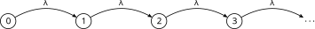
Ogni stato è quindi transitorio, e non esiste una distribuzione invariante. Infatti, se \(\pi\) fosse invariante, allora \[ 0 = (\pi L)_0 = \pi_0 L_{0 \to 0} = - \pi_0 \lambda \quad \text{e quindi} \quad \pi_0 = 0,\] mentre \[ 0 = (\pi L)_1 = \pi_0 L_{0 \to 1} + \pi_1 L_{1\to 1} = - \pi_1 \lambda \quad \text{e quindi} \quad \pi_1 = 0,\] e similmente si ottiene, per ogni \(n \ge 1\), \(\pi_n = 0\). Non è possibile quindi che \(\pi\) sia una densita discreta di probabilità (non può essere \(\sum_{n} \pi_n = 1\)).
C’è un legame preciso tra il processo di Poisson e la densità discreta di Poisson definita nell’Esempio ?exm-poisson-density. Infatti, se definiamo, per ogni \(t \ge 0\), \[ \pi^t_n \propto \frac{ (t \lambda)^n}{n!} =\frac{ (t \lambda)^n}{n!} \exp\bra{-t\lambda}.\] la densità Poisson di parametro \(t \lambda\), allora \(\pi^t\) è la densità della marginale \(X_t\) di un processo di Poisson tale che \(X_0 = 0\) (la densità \(\pi^0\) vale infatti \(1\) nel valore \(0\)). Basta verificare che valga la master equation, per ogni \(n \in \mathbb{N}\), \(t \ge 0\), \[ \frac{d}{dt} \pi^t_n = (\pi^t L)_n = \begin{cases} - \lambda \pi^t_0 &\text{se $n=0$,} \\ \lambda( \pi^t_{n-1} - \pi^t_n ) & \text{se $n \ge 1$.}\end{cases} \] Calcoliamo quindi \[ \frac {d}{dt} \exp\bra{-t\lambda}\frac{ (t \lambda)^n}{n!} = \begin{cases} - \lambda \exp\bra{- t \lambda} & \text{se $n=0$,}\\ \frac{ n t^{n-1} \lambda^n}{n!} \exp\bra{- t \lambda} - \lambda \frac{(t\lambda)^n}{n!} \exp\bra{- t \lambda} & \text{ se $n \ge 1$.} \end{cases} \] Per concludere nel caso \(n \ge 1\) basta notare che \[\frac{ n t^{n-1} \lambda^n}{n!} \exp\bra{- t \lambda} = \lambda \frac{ (t\lambda)^{n-1}}{(n-1)!} \exp\bra{- t \lambda} = \lambda \pi^t_{n-1}.\] Consideriamo infine il problema di stimare il parametro \(\lambda\) a partire dall’osservazione di un cammino \(\gamma = (x_0 \to x_1 \to \ldots \to x_{n})\) con tempi di permanenza \(t_1\) (nello stato \(x_0\)), \(t_2\) (in \(x_1\)), …., \(t_{n+1}\). Osserviamo che, poiché i salti avvengono solo tra uno stato \(n\) e il successivo \(n+1\), deve essere \(x_1 = x_0+1\), \(x_2=x_0+2\), ecc., quindi la formula per la verosimiglianza in questo caso diventa \[ L( \Lambda = \lambda; X = \gamma) = \prod_{k=1}^n \exp\bra{- \lambda t_k} \lambda = \lambda^n \exp\bra{- \lambda T}. \] dove abbiamo supposto per semplicità che fosse noto a priori che \(X_0 = x_0\) e abbiamo indicato con \(T = \sum_{k=1}^n t_k\). La stima di massima verosimiglianza \(\lambda_{MLE}\) si trova passando al logaritmo e imponendo che la derivata si annulli. Si trova \[ \frac{n}{\lambda_{MLE}} - T = 0 \quad \text{quindi} \quad \lambda_{MLE} = \frac{n}{T}.\]
In un intervallo di tempo \(T = 5\) minuti si osservano entrare \(n = 10\) persone in un supermercato. Si può introdurre quindi un processo di Poisson con intensità \(\lambda = 2\) (persone/minuto) per modellizzare gli ingressi.
Per un approccio bayesiano, in cui i calcoli siano particolarmente semplici si può introdurre una densità a priori per la variabile \(\Lambda\) del tipo Gamma, ossia \[ p(\Lambda = \lambda) \propto \lambda^{\alpha-1 } \exp\bra{ - \beta \lambda },\] dove \(\alpha\), \(\beta>0\) sono parametri (si scrive anche \(\Gamma(\alpha, \beta)\)). Il valor medio di \(\Lambda\) (a priori) si può calcolare ed è dato da \(\alpha/\beta\), mentre la moda è \((\alpha-1)/\beta\) (per \(\alpha\ge 1\)). Nel caso \(\alpha=1\) essa coincide con una densità esponenziale di parametro \(\beta\). Questa densità rappresenta in modo preciso una possibile informazione nota sul parametro \(\lambda\), ad esempio informalmente che \(\lambda \approx \alpha/\beta\).
La densità a posteriori diventa quindi \[ p(\Lambda = \lambda| X = \gamma) \propto \lambda^{n+\alpha-1 } \exp\bra{ -(\beta+T) \lambda },\] ossia una densità \(\Gamma(n+\alpha, \beta+T)\). La moda della densità a posteriori è quindi (se \(n +\alpha \ge 1\)) \[ \lambda_{MAP} = \frac{ n+\alpha}{T +\beta}.\]
6.6.2 Code \(M/M/1\)
Consideriamo ora la situazione in cui vi sia un solo servente (\(M/M/1\)), e che il tempo di servizio per ciascun cliente sia una variabile esponenziale di parametro \(\mu\) (ogni cliente sia indipendente dagli altri). Per modellizzare la coda con un processo di Markov a salti, conviene considerare prima il caso in cui non vi siano arrivi. In tal caso si osserveranno solamente salti da uno stato \(n\) verso \(n-1\) (se \(n \ge 1\)) con dei tempi di permanenza esponenziali di parametro \(\mu\). Pertanto, si avrà (se \(n\ge 1\)) \[L_{n \to n-1} = \mu.\] Nel caso in cui vi siano arrivi con un processo di Poisson di intensità \(\lambda\), poniamo, per \(n \ge 0\), \[ L_{n \to n+1} = \lambda,\] e di conseguenza \[ L_{ n \to n} = \begin{cases} -\lambda & \text{se $n = 0$}\\ -(\lambda + \mu) & \text{se $n \ge 1$,}\end{cases}\] avendo posto \(L_{ n \to k} = 0\) se \(k \notin \cur{n-1, n, n+1}\).
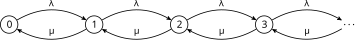
Ogni stato è ricorrente, ma essendo infiniti stati non è ovvio che esista una distribuzione invariante. Vi è infatti una competizione tra il tasso di arrivo \(\lambda\) e di uscita \(\mu\). Analogamente a quanto fatto nel caso di Poisson, si può risolvere l’equazione \(\pi L = 0\) e ottenere per \(n \ge 0\), \[\pi_n \propto \bra{ \frac{\lambda}{\mu}}^n.\] È un semplice esercizio verificare che \(\pi\) soddisfa l’equazione, ossia \[ 0 = (\pi L)_n = \pi_{n-1} L_{n-1 \to n} + \pi_n L_{n\to n} +\pi_{n+1}L_{n+1\to n} = \lambda \pi_{n-1} -(\lambda+\mu) \pi_n + \mu \pi_{n+1}\] (per \(n \ge 1\), mentre per \(n=0\) bisogna porre \(L_{-1 \to 0} = 0\)).
Dovendo garantire che tale \(\pi\) sia una densità di probabilità, bisogna che \[\sum_{n} \bra{ \frac\lambda \mu}^n < \infty,\] ma tale serie (geometrica) converge se e solo se \(\lambda<\mu\). In altri termini, esiste un equilibrio per la coda se e solo se il tasso di arrivo è strettamente minore di quelo di uscita, altrimenti il numero di persone in coda cresce (più lentamente del processo di Poisson, ma comunque in modo inarrestabile).
La distribuzione invariante se \(\lambda<\mu\) è quindi una densità geometrica di parametro \(1-\lambda/\mu\). In particolare, il valor medio del numero di clienti nella coda (in attesa o in servizio) \(N\) in regime stazionario (ossia se la marginale del processo a salti è \(\pi\)) vale \[ \E{N} = \sum_{n} n \pi_n = \frac{\lambda}{\mu -\lambda},\] una quantità che diverge al tendere di \(\lambda\) verso \(\mu\).
deltal = 0.001
l = seq(0.5,0.99, by=deltal)
mu=1
plot(l, l/(1-l), type='l', col=miei_colori[2], lwd=3, xlab = "tasso di ingresso", ylab= "numero medio di clienti")
abline(h=50, col=miei_colori[1], lwd=3)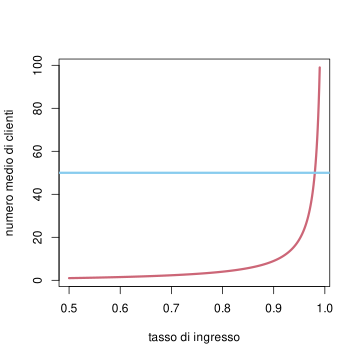
Tale divergenza è problematica se \(\lambda\) si trova molto vicino a \(\mu\) e per qualche motivo il tasso di ingresso aumenta, anche di poco, portando a superare il limite massimo possibile di clienti in coda (che nella realtà esiste sempre).
Prima della pandemia gli ospedali operavano in modo da usare tutti o quasi i posti letto disponibili – usando quindi efficientemente tutte le risorse di personale e strutture. Rappresentando un ospedale come una coda, erano quindi molto vicini al limite massimo di possibili “clienti” (i pazienti) in coda. L’arrivo del nuovo coronavirus ha avuto l’effetto di aumentare il tasso di ingresso, causando un aumento notevole di \(N\) con conseguenze potenzialmente catastrofiche.
Veniamo ora alla stima dei parametri \((\lambda, \mu)\) sulla base dell’osservazione di un cammino \(\gamma = (n_0 \to n_1 \to \ldots \to n_\ell)\) con i soliti tempi di permanenza \(t_1\), \(t_2\), …, \(t_\ell\) e poniamo pure \(T = \sum_{k=1}^\ell t_i\). Supponiamo inoltre che il cammino osservato non passi mai per lo stato \(0\) (quindi c’è sempre almeno un cliente in coda). Usando l’espressione ?eq-likelihood-jump-process, si ottiene la verosimiglianza \[ L( \lambda, \mu; X=\gamma) = \exp\bra{-(\lambda+\mu)T} \lambda^{\gamma_+} \mu^{\gamma_-},\] dove \(\gamma_+\) indica il numero di arrivi osservati in \(\gamma\) (ossia transizioni da uno stato \(n\) a \(n+1\)), mentre \(\gamma_-\) il numero di uscite. La stima di massima verosimiglianza è quindi \[ \lambda_{MLE} = \frac{\gamma_+}{T}, \quad \mu_{MLE} = \frac{\gamma_-}{T}.\] Se invece il cammino trascorre un tempo \(T_0\) nello stato \(0\), l’espressione per la verosimiglianza cambia (al posto di \(-(\lambda+\mu)T\) si trova \(-\lambda T -\mu (T-T_0)\) e di conseguenza \(\lambda_{MLE}\) non cambia, ma \[ \mu_{MLE} = \frac{\gamma_-}{T-T_0}.\] L’interpetazione è che il tempo trascorso con la coda vuota non può essere utile alla stima del tasso di uscita dei clienti dalla coda, e quindi va sottratto.
In un intervallo di \(10\) minuti si osservano \(5\) persone arrivare alla cassa di un supermercato e \(3\) persone uscirne. Supponendo che la cassa non sia mai senza lavoro si stimano i parametri \(\lambda = 1/2\) persone al minuto, \(\mu = 3/10\) persone al minuto. Se invece la cassa è rimasta priva di persone in coda per \(4\) minuti, si stima \(\mu = 3/6 =1/2\) persone al minuto.
Tralasciamo l’approccio bayesiano, che è simile al caso del Poisson (supponendo ad esempio \(\lambda\), \(\mu\) indipendenti a priori).
6.6.3 Code \(M/M/\infty\)
Consideriamo infine la situazione opposta, in cui vi sono un numero arbitrariamente grande, idealmente infinito, di serventi (\(M/M/\infty\)). Supponiamo ancora che il tempo di servizio per ciascun cliente sia una variabile esponenziale di parametro \(\mu\) (e ogni cliente sia indipendente dagli altri). Per capire quali intensità di salto definire, conviene considerare ancora il caso in cui non vi siano arrivi. In tal caso si osserveranno solamente salti da uno stato \(n\) verso \(n-1\) (se \(n \ge 1\)) con dei tempi di permanenza dati dal minimo di \(n\) variabili aleatorie \(T_1\), \(T_2\), , \(T_n\) esponenziali indipendenti tra loro (infatti, la transizione avviene appena il cliente che impega meno tempo tra gli \(n\) in servizo lascia la coda). Possiamo allora affermare che tale tempo è una variabile esponenziale \(T\), di parametro \(n\mu\): infatti si calcola la funzione di sopravvivenza (per \(t\ge 0\)) \[\begin{equation*}\begin{split} \SUR_T(t) & = P( \min \cur{T_1, T_2, \ldots, T_k} > t )\\ & = P( T_1>t, T_2>t, \ldots, T_n >t) \\ & = P(T_1>t) P(T_2>t) \cdot \ldots\cdot P(T_n>t) \\ & = e^{-\mu t} \cdot e^{-\mu t} \cdot \ldots \cdot e^{-\mu t}\\ & = e^{-n\mu t}, \end{split} \end{equation*}\] e derivando si ottiene la densità esponenziale.
Pertanto, si avrà (se \(n\ge 1\)) \[L_{n \to n-1} = n \mu\] Nel caso in cui vi siano arrivi con un processo di Poisson di intensità \(\lambda\), poniamo, per \(n \ge 0\), \[ L_{n \to\ n+1} = \lambda,\] e di conseguenza \[ L_{ n \to n} = \begin{cases} -\lambda & \text{se $n = 0$}\\ -(\lambda + n\mu) & \text{se $n \ge 1$,}\end{cases}\] avendo posto \(L_{ n \to k} = 0\) se \(k \notin \cur{n-1, n, n+1}\).
Come nel caso \(M/M/1\), ogni stato è ricorrente, ma essendo infiniti stati non è ovvio che esista una distribuzione invariante. Vi è ancora una competizione tra il tasso di arrivo \(\lambda\) e di uscita \(\mu\), ma decisamente “smorzata” dal fatto che per \(n\) abbastanza grande si avrà comunque \(\lambda <n\mu\). Questo suggerisce che una distribuzione invariante esista sempre. Infatti, si può risolvere l’equazione \(\pi L = 0\) e ottenere per \(n \ge 0\), \[\pi_n \propto \frac{1}{n!} \bra{ \frac{\lambda}{\mu}}^n,\] ossia una densità Poisson di parametro \(\lambda/\mu\). Lasciamo per esercizio di verificare che \(\pi\) soddisfa l’equazione \(\pi L = 0\). Il valor medio del numero di clienti nella coda è quindi \(\E{N} = \lambda/\mu\) che cresce linearmente al crescere di \(\lambda\) (non presenta asintoti).
Infine, la stima dei parametri \((\lambda, \mu)\) sulla base dell’osservazione di un cammino \(\gamma = (n_0 \to n_1 \to \ldots \to n_{\ell-1})\) con i tempi di permanenza \(t_1\), \(t_2\), …, \(t_\ell\) si può effettuare tramite il metodo di massima verosimiglianza, usando l’espressione ?eq-likelihood-jump-process: \[ L( \lambda, \mu; X=\gamma) \propto \exp\bra{-\lambda T - \mu T_\gamma )} \lambda^{\gamma_+} \mu^{\gamma_-},\] dove \(T = \sum_{k=1}^\ell t_i\), \(\gamma_+\) e \(\gamma_-\) sono come nel caso \(M/M/1\) e infine \[ T_\gamma = \sum_{k=1}^\ell t_i n_i,\] (il tempo totale trascorso da tutti i clienti osservati nella coda). La stima di massima verosimiglianza è quindi \[ \lambda_{MLE} = \frac {\gamma_-}{T}, \quad \mu_{MLE} = \frac{\gamma_-}{T_\gamma}.\]
Un ipermercato dispone di un numero molto grande di casse, e al mattino è poco frequentato cosicché ogni cliente trova sempre una cassa libera. Si osserva che per \(4\) minuti consecutivi tutte le casse erano libere, per \(3\) minuti \(1\) sola cassa era occupata, poi si è liberata per \(1\) minuto tutte le casse erano di nuovo libere, e infine per \(2\) minuti in un intervallo di \(10\) minuti minuti tutte le casse erano libere, per \(3\) minuti una sola cassa era occupata, e per i rimanenti \(3\) minuti \(5\) casse erano occupate.
Osservazione. Il caso generale \(M/M/c\) con \(2 \le c < \infty\) è intermedio tra i due estremi che abbiamo considerato. In particolare una distribuzione invariante esiste se e solo se \(\lambda < c\mu\).